工程流体力学（甲）Ⅰ¶
课程信息
- 主讲教师：俞自涛、范利武
- 教材：孔珑主编《工程流体力学（第四版）》，中国电力出版社
- 期末考试：2026 年 11 月 7 日（周六）10:30–12:30，闭卷，占总评 60%
- 题型：填空 10 题共 40 分（每题 2 空，每空 2 分）· 证明 2 题共 20 分 · 问答 2 题共 20 分 · 计算 2 题共 20 分（俞老师 11 月 3 日最新说法）
- 平时成绩 40%：10 次作业 20%、2 篇阅读 10%、2 次测验 10%
这是一份面向期末的复习讲义，章节按老师发的《期末复习提纲》编排：第一章流体性质、第二章静力学、第三章理想流体、第四章黏性管流、第五章量纲分析。课上讲过的可压缩一维流动不在提纲里，放在文末附录，时间不够可以跳过。
每一节的写法尽量统一：先用一两句话说清这节在讲什么、考什么，再给必背公式，然后是证明题的标准写法，最后是例题和易错点。
章节概览¶
| 章节 | 标题 | 一句话 | 考试可能性 | 重要程度 | 状态 |
|---|---|---|---|---|---|
| 第一章 | 流体的性质 | 流体为什么会流，黏性和表面张力怎么算 | 高 | ★★☆ | ✅ |
| 第二章 | 流体静力学 | 静止流体的压强怎么分布，对壁面的力多大、作用在哪 | 中 | ★★☆ | ✅ |
| 第三章 | 理想流体动力学 | 质量、动量、能量三大守恒在无黏流体中的样子 | 高 | ★★★ | ✅ |
| 第四章 | 黏性流体管内流动 | 实际管路的能量损失怎么算 | 高 | ★★★ | ✅ |
| 第五章 | 量纲分析与相似原理 | 用无量纲数组织实验、设计模型 | 高 | ★★★ | ✅ |
| 附录 | 可压缩一维流动 | 提纲未列，本次不考 | 不考 | ★☆☆ | ✅ |
考前怎么用这一页¶
正文标签怎么看¶
正文每节标题下都有三个标签，用来决定先看什么。
| 标签 | 取值 | 含义 |
|---|---|---|
| 考试可能性 | 必考 | 老师原话说必考 |
| 高 | 老师点名要会，或明确说考试会出 | |
| 中 | 提纲列了，或课上讲过，可能以填空、问答出现 | |
| 低 | 老师说看看就行，或只作为背景 | |
| 不考 | 老师说不考，或提纲对照表里没有 | |
| 重要程度 | ★★★ / ★★☆ / ★☆☆ | 对做题和理解后续内容的帮助 |
| 掌握程度 | 会推导、会计算、会用公式、背熟、理解概念、看懂、了解、不用看 | 复习到这个程度就够了 |
除“必考”外，这些标签是根据提纲、手写稿和全部课程字幕做的判断，不是老师公布的范围。
复习课划的重点¶
根据全部课程字幕整理：11 月 3 日俞老师讲考试范围，11 月 5 日范老师做复习课，其余课上提到考试的地方也收在这里。出卷的是俞老师。
老师的总体态度：重心在第三章动力学，更想考概念和推导，不爱出难算题。 俞老师的总规则是：提纲上没有的不考，没讲过的不考，难度比往年容易。
| 优先级 | 内容 | 老师的说法 |
|---|---|---|
| 必考 | 物质导数 \(\dfrac{\mathrm d}{\mathrm dt}=\dfrac{\partial}{\partial t}+(\boldsymbol V\cdot\nabla)\) | 定常时 \(\partial/\partial t=0\)，但 \(\mathrm d/\mathrm dt\) 不一定为 0；局部加速度和对流（迁移）加速度要分清 |
| 最核心 | 理想流体运动方程 | 本学期最核心，用力的分析求解 |
| 必须会推 | 伯努利方程 | 必须走一遍，5 个条件很重要，范老师说“经常考到” |
| 必须会推 | 毕托管、文丘里管 | 记不住公式也要能推出来 |
| 必须会推 | 圆管层流 | 推一遍抛物线，积一遍平均流速；\(\lambda=64/\mathrm{Re}\) 不知道就“太过分了”。俞老师 10 月 22 日说哈根–泊肃叶公式“必考”，要记住 |
| 概念翻译 | 定常、不可压、理想流体、牛顿内摩擦定律 | 要能把词翻译成数学式：\(\partial/\partial t=0\)、\(\rho=\) 常数、不计切应力、切应力与速度梯度成正比 |
| 重要 | 连续性方程、拉格朗日法与欧拉法 | 微分形式和 \(VA=\) 常数都要会 |
| 重要 | 沿程阻力系数、雷诺数 | 达西公式要知道；雷诺数是惯性力与黏性力之比 |
| 重要 | 单管路流量题 | 课后答疑时老师让关注 |
| 了解 | 动力黏度与运动黏度、黏度随温度变化 | 液体升温黏度减小，气体相反 |
| 很可能有一题 | \(\Pi\) 定理 | 范老师 10 月 29 日说“一般我们考试会出这么一题”，当天布置的两道作业“考试里面会有类似的”，要亲手重做 |
| 了解 | 相似原理 | 有所了解就好，考试基本考 \(\Pi\) 定理 |
| 淡化 | 动量方程 | 能量、动量淡化，尽量考概念 |
| 看看就行 | 静力学第五到八节：相对平衡、平面、曲面、浮力 | 可以出得很难，但老师不喜欢，说这种题像高中题 |
| 看懂就行 | 压差驱动的两平板流动 | 11 月 3 日课上讲了但说不考；提纲仍列两板流动，纯剪切流要会 |
明确不考（知道概念就行，不用花时间）：
- 迭代法，俞老师说“很明确的告诉大家不考”
- 莫迪图和各区阻力公式，不用背；沿程阻力只考最简单的情形
- 极坐标连续性方程和柱、球坐标方程，老师本来想考，已经换题
- 水力直径和非圆管
- 两平板的水力直径对比、倾斜平板和同心环流动
- 边界层，已确定不考，别的班没学过，放到下个月再考
- 混合长度和湍流时均理论，俞老师 10 月 20 日说不会考
- 黏性底层厚度公式和湍流对数律，不用背；只记雷诺数越大，黏性底层越薄
- 相似准则的比例换算
- 环路和管网
- 局部损失的各种系数表，不用背
- 剪切变形率的推导
- 提纲对照表里没有的内容，比如水击和可压缩流动
题型与复习策略¶
| 题型 | 分值 | 怎么准备 |
|---|---|---|
| 填空 | 10 题，每题 2 空，每空 2 分 | 背定义、单位、条件和几个关键数字（\(2300\)、\(64/\mathrm{Re}\)、伯努利的条件等）。名词要写对，比如“文丘里管”，俞老师两次提到有人写错。每章末尾的「填空速记」就是为它准备的 |
| 证明 | 2 题 × 10 分 | 把下面「证明题清单」里的推导自己默写一遍。重点是取微元、列受力、化简这几步，不必背原句 |
| 问答 | 2 题 × 10 分 | 分值比原来多一倍。老师把第三道计算题改成了问答分析题，看你是否掌握方法。准备概念对比和方法分析：牛顿与非牛顿流体、层流与湍流、\(\partial/\partial t\) 与 \(\mathrm d/\mathrm dt\)、拉格朗日法与欧拉法、伯努利五个条件、相似原理 |
| 计算 | 2 题 × 10 分 | 优先准备三类：单管路能量方程求流量（沿程 + 局部损失）、伯努利 + 连续性（文丘里、皮托管、小孔）、\(\Pi\) 定理推关系式。简单串联看老师例题。静压力题复习课说不深挖 |
证明题清单¶
按复习课的说法重排。先把第一组默写熟，时间够再看第二组。
第一组：老师点名要会推
- 理想流体运动方程（欧拉方程）
- 伯努利方程，五个条件逐步加
- 圆管层流：速度抛物线、平均流速、\(\lambda=64/\mathrm{Re}\)
- 皮托管、文丘里管的流速和流量公式
- 用 \(\Pi\) 定理推关系式，也可能出成计算题
第二组：手写稿完整推过，有可能考
第三组：看懂就行
- 两平板间流动的速度分布（纯剪切流要会，压差驱动看懂）
- 平面总压力与压力中心
- 旋转容器自由液面为抛物面
极坐标连续性方程虽然在回忆卷出现过，但这次老师已经换题，不用准备。
证明题怎么写才拿满分
- 画图并说明所取的微元或控制体，标出坐标和尺寸。
- 写清假设：定常/不可压/忽略黏性/充分发展等。阅卷时，假设本身就是得分点。
- 列受力或守恒式，每一项写出来源（左面压力、右面压力、重力……）。
- 化简时说明约去了什么、略去了哪些高阶小量。
- 框出结论，必要时补一句物理意义。
提纲对照表¶
| 提纲条目 | 本页位置 | 可能的题型 |
|---|---|---|
| 流体定义及性质、黏度、牛顿流体、牛顿内摩擦定律 | 第一章 | 填空、问答 |
| 牛顿与非牛顿流体的区别 | 非牛顿流体 | 问答 |
| 表面张力 | 表面张力 | 填空、小计算 |
| 雷诺数定义 | 雷诺数 | 填空 |
| 两板间流动 | 两板间流动 | 纯剪切流要会；压差驱动看懂 |
| 帕斯卡定律、静压分布 | 第二章前半 | 填空、证明 |
| 平面、曲面上的静压力 | 平面、曲面 | 看看就行 |
| 理想流体、质量守恒、达朗贝尔定律、散度 | 第三章前半、散度动画与证明 | 填空、证明 |
| 欧拉方程、积分动量方程 | 欧拉方程、动量方程 | 欧拉方程证明；动量淡化 |
| 伯努利方程及其假设条件 | 伯努利方程 | 填空、证明 |
| 小孔出流、皮托管、文丘里流量计 | 伯努利应用 | 证明、计算 |
| 黏性流体伯努利方程、达西公式、局部损失 | 第四章前半 | 填空、计算 |
| 层流与湍流、圆管层流、哈根–泊肃叶 | 圆管层流 | 证明、填空；公式要记 |
| 水力光滑与粗糙、莫迪图（不考） | 湍流与阻力系数 | 概念填空、问答；公式不用背 |
| 局部损失（用下游速度水头） | 局部损失 | 证明、计算 |
| 串联、并联管路（「见笔记上的举例」） | 管路系统 | 单管路和简单串联优先；环路、管网不考 |
| 量纲分析、量纲一致性、\(\Pi\) 定理、相似原理 | 第五章 | \(\Pi\) 定理证明或计算；相似原理了解 |
公式速查¶
怎么用这张表
按章分页，点标签切换。每条公式都写了适用条件，最后一列链接到正文的推导或例题。做计算题卡住时，先在这里找对应的公式，再回正文看例题怎么用。闭卷考试，表里的公式和条件都要背。
流体性质
| 符号 | 含义 | 单位或关系 |
|---|---|---|
| \(\rho\) | 密度 | \(\mathrm{kg/m^3}\) |
| \(\gamma=\rho g\) | 重度（比重） | \(\mathrm{N/m^3}\) |
| \(\mu\) | 动力黏度 | \(\mathrm{Pa\cdot s}\) |
| \(\nu=\mu/\rho\) | 运动黏度 | \(\mathrm{m^2/s}\) |
| \(\sigma\) | 表面张力系数 | \(\mathrm{N/m}\) |
| \(K\) | 体积弹性模量 | \(\mathrm{Pa}\) |
压强与静力学
| 符号 | 含义 | 说明 |
|---|---|---|
| \(p\)、\(p_a\) | 压强、大气压 | \(\mathrm{Pa}\) |
| \(h_C\)、\(y_C\) | 形心的淹深、沿平面的坐标 | 计算总压力大小用 |
| \(h_D\)、\(y_D\) | 压力中心的淹深、沿平面的坐标 | 总压力的作用点 |
| \(I_C\) | 面积对过形心水平轴的惯性矩 | \(\mathrm{m^4}\) |
| \(A_x\) | 曲面在竖直面上的投影面积 | 求水平分力 |
| \(V_p\) | 压力体体积 | 求竖直分力 |
| \(\omega\) | 角速度（旋转容器、转轴、圆盘） | \(\omega=2\pi n/60\)，\(n\) 单位 \(\mathrm{r/min}\) |
流动与管路
| 符号 | 含义 | 说明 |
|---|---|---|
| \(\boldsymbol V=(u,v,w)\) | 速度矢量及分量 | \(\mathrm{m/s}\) |
| \(V\) | 断面平均流速 | \(V=Q/A\) |
| \(Q\)、\(\dot m\) | 体积流量、质量流量 | \(\dot m=\rho Q\) |
| \(\alpha\) | 动能修正系数 | 层流 2，湍流约 1.05 |
| \(\lambda\) | 沿程阻力系数（达西系数） | 英文教材、课堂 OneNote 记作 \(f\) |
| \(\zeta\) | 局部阻力系数 | 英文教材记作 \(K\) |
| \(h_f\)、\(h_j\)、\(h_w\) | 沿程、局部、总水头损失 | \(\mathrm m\) |
| \(\Delta\) | 管壁绝对粗糙度 | 英文教材记作 \(\varepsilon\) |
| \(\tau_w\) | 壁面切应力 | \(\mathrm{Pa}\) |
| \(\delta\) | 缝隙宽度、黏性底层厚度或边界层厚度 | 按上下文区分 |
| \(D_h\) | 水力直径 | \(4A/\mathcal P\) |
| \(\mathrm{Re}\)、\(\mathrm{Fr}\)、\(\mathrm{Eu}\) | 雷诺数、弗劳德数、欧拉数 | 无量纲 |
同一个字母的不同用法
老师手写稿里 \(\gamma\) 表示重度 \(\rho g\)；附录里的气体比热比另记为 \(\gamma_g\)。\(\mu\) 在第一、四章是动力黏度，在小孔、文丘里、管路公式里是流量系数。遇到原题以题目定义为准。
黏性
| 公式 | 条件 / 说明 | 详见 |
|---|---|---|
| \(\tau=\mu\dfrac{\mathrm du}{\mathrm dy}\) | 牛顿内摩擦定律，只适用于牛顿流体 | 黏性 |
| \(\nu=\dfrac{\mu}{\rho}\) | 运动黏度 | 黏性 |
| \(\dfrac{\mathrm du}{\mathrm dy}\approx\dfrac{U}{\delta}\) | 窄缝内速度近似线性分布（\(\delta\) 很小） | 例题 |
| \(F=\mu\dfrac{UA}{\delta}\) | 平板拖动力（库埃特流） | 两板间流动 |
| \(M=\dfrac{\pi\mu Ld^3\omega}{4\delta}\)，\(P=M\omega\) | 同心圆柱转轴的阻力矩与功率（轴面速度处处相同） | 例题 |
| \(M=\dfrac{\pi\mu\omega d^4}{32\delta}\) | 圆盘一侧的阻力矩（速度随 \(r\) 变，要圆环积分） | 例题 |
| \(u=\dfrac{U}{h}y+\dfrac{1}{2\mu}\left(-\dfrac{\mathrm dp}{\mathrm dx}\right)y(h-y)\) | 两板间流动通解；上板固定时 \(\bar u=\frac23u_{\max}\) | 证明 |
表面张力、压缩性、雷诺数
| 公式 | 条件 / 说明 | 详见 |
|---|---|---|
| \(h=\dfrac{4\sigma\cos\theta}{\rho gd}\) | 毛细管液面高度；\(\theta<90^\circ\) 上升，\(\theta>90^\circ\) 下降 | 表面张力 |
| \(\Delta p=\dfrac{2\sigma}{R}\)；肥皂泡 \(\dfrac{4\sigma}{R}\) | 液滴一个界面，肥皂泡两个界面 | 表面张力 |
| \(K=-V\dfrac{\mathrm dp}{\mathrm dV}\) | 体积弹性模量，越大越难压缩 | 第一章 |
| \(Q_2=Q_1[1+\alpha_V(T_2-T_1)]\) | 质量流量不变，体积随温度膨胀 | 作业 2-7 |
| \(\mathrm{Re}=\dfrac{\rho Vd}{\mu}=\dfrac{Vd}{\nu}\) | 惯性力 / 黏性力；圆管 \(\mathrm{Re}_c=2300\) | 雷诺数 |
静压分布
| 公式 | 条件 / 说明 | 详见 |
|---|---|---|
| \(\nabla p=\rho\boldsymbol f\) | 欧拉平衡方程，任何静止流体 | 证明 |
| \(p=p_0+\rho gh\) 或 \(z+\dfrac{p}{\rho g}=C\) | 只受重力、均质、连通、静止的液体 | 静压分布 |
| \(p_{\text{表}}=p-p_a\)，\(p_{\text{真空}}=p_a-p\) | 表压、真空度 | 静压分布 |
| \(p_2=p_1\exp\left[-\dfrac{g(z_2-z_1)}{RT}\right]\) | 等温大气 | 静压分布 |
| \(F_2=F_1\dfrac{A_2}{A_1}\) | 帕斯卡定律（液压机），两活塞同高 | 帕斯卡 |
| 向下 \(+\rho g\Delta h\)，向上 \(-\rho g\Delta h\) | 压强计：沿连通液体逐段走 | 压强计 |
平面与曲面上的总压力
| 公式 | 条件 / 说明 | 详见 |
|---|---|---|
| \(F=\rho gh_CA\) | 平面总压力 = 形心压强 × 面积 | 证明 |
| \(y_D=y_C+\dfrac{I_C}{y_CA}\) | 压力中心，\(y\) 沿平面从液面交线量起；\(D\) 在形心下方 | 证明 |
| \(x_D-x_C=\dfrac{I_{Cxy}}{y_CA}\) | 横向位置；平面左右对称时 \(x_D=x_C\) | 证明 |
| 矩形 \(\dfrac{bh^3}{12}\)；圆 \(\dfrac{\pi d^4}{64}\)；三角形 \(\dfrac{bh^3}{36}\) | 常用截面对形心水平轴的 \(I_C\) | 惯性矩表 |
| \(F_x=\rho gh_{C,x}A_x\) | 曲面水平分力 = 竖直投影面上的平面总压力 | 曲面 |
| \(F_z=\rho gV_p\) | 曲面竖直分力 = 压力体内液重；实压力体向下，虚压力体向上 | 曲面 |
| \(F=\sqrt{F_x^2+F_z^2}\)，\(\tan\alpha=\dfrac{F_z}{F_x}\) | 曲面合力；圆弧面合力过圆心 | 曲面 |
| \(F_B=\rho gV_{\text{排}}\) | 浮力，作用在浮心 | 浮力 |
相对平衡
| 公式 | 条件 / 说明 | 详见 |
|---|---|---|
| \(\nabla p=\rho(\boldsymbol g-\boldsymbol a)\) | 液体随容器做刚体运动；等压面垂直于 \(\boldsymbol g-\boldsymbol a\) | 相对平衡 |
| \(\tan\theta=\dfrac{a_x}{g+a_z}\) | 容器水平加速时液面倾角 | 相对平衡 |
| \(p=p_0+\dfrac12\rho\omega^2r^2-\rho gz\) | 绕竖直轴等角速旋转；原点取轴心液面。\(p_0=p_a\) 得绝对压强，\(p_0=0\) 得表压（计示压强）；求壁面受力、外侧是大气时用表压 | 证明 |
| \(z=\dfrac{\omega^2r^2}{2g}\) | 自由液面为旋转抛物面 | 证明 |
| 中心降、边缘升各 \(\dfrac{\omega^2R^2}{4g}\) | 开口圆筒，相对原静止液面；抛物面体积为同底同高圆柱的一半 | 证明 |
| \(F=\displaystyle\int_0^R p(r)\,2\pi r\,\mathrm dr\) | 旋转液体对顶盖或底面的总压力；压强随 \(r\) 变，必须圆环积分 | 习题 3-17 |
| 等压面 \(z=\dfrac{\omega^2r^2}{2g}+C\) | 形状与密度无关；两种液体的分界面也是这种抛物面 | 习题 3-19 |
质量守恒
| 公式 | 条件 / 说明 | 详见 |
|---|---|---|
| \(Q=\displaystyle\int_A\boldsymbol V\cdot\boldsymbol n\,\mathrm dA\)，\(V=\dfrac QA\) | 流量与断面平均流速 | 研究方法 |
| \(\dfrac{\partial\rho}{\partial t}+\nabla\cdot(\rho\boldsymbol V)=0\) | 连续性微分方程，任何流动 | 证明 |
| \(\nabla\cdot\boldsymbol V=0\) | 不可压缩流体（定常、非定常均可） | 证明 |
| \(\nabla\cdot\boldsymbol V=\dfrac{1}{\delta V}\dfrac{\mathrm d(\delta V)}{\mathrm dt}\) | 散度 = 微团的相对体积变化率；只管体积，不管形状 | 动画与证明 |
| \(\dfrac{\partial v_r}{\partial r}+\dfrac{v_r}{r}+\dfrac1r\dfrac{\partial v_\theta}{\partial\theta}=0\) | 不可压缩二维流动，极坐标；本次不考 | 证明 |
| \(\rho_1V_1A_1=\rho_2V_2A_2\)；\(V_1A_1=V_2A_2\) | 一维定常管流；后者为不可压缩 | 证明 |
动量守恒
| 公式 | 条件 / 说明 | 详见 |
|---|---|---|
| \(\boldsymbol a=\dfrac{\partial\boldsymbol V}{\partial t}+(\boldsymbol V\cdot\nabla)\boldsymbol V\) | 局部加速度 + 对流加速度；物质导数必考 | 加速度 |
| \(\dfrac{\mathrm d\boldsymbol V}{\mathrm dt}=\boldsymbol f-\dfrac1\rho\nabla p\) | 欧拉运动方程，只适用于理想流体 | 证明 |
| \(\sum\boldsymbol F=\rho Q(\boldsymbol V_2-\boldsymbol V_1)\) | 动量方程：定常、一进一出、断面速度均匀；求固壁受力 | 动量方程 |
能量守恒（伯努利方程）
| 公式 | 条件 / 说明 | 详见 |
|---|---|---|
| \(z+\dfrac{p}{\rho g}+\dfrac{V^2}{2g}=C\) | 定常、不可压、无摩擦、沿流线、无轴功、无传热 | 证明 |
| \(V=\varphi\sqrt{2gh}\)，\(Q=\mu A\sqrt{2gh}\) | 小孔出流；理想时 \(\varphi=1\) | 应用 |
| \(u=\sqrt{\dfrac{2(p_0-p)}{\rho}}=\sqrt{2g\Delta h\dfrac{\rho'-\rho}{\rho}}\) | 皮托管；\(\rho'\) 为 U 形管指示液密度 | 应用 |
| \(Q=\mu A_2\sqrt{\dfrac{2g\Delta h(\rho'-\rho)}{\rho(1-A_2^2/A_1^2)}}\) | 文丘里流量计，\(\mu=0.95\sim0.98\)；与管道是否倾斜无关 | 应用 |
| \(\dfrac{p}{\rho g}+\dfrac{u^2}{2g}-\dfrac{\omega^2r^2}{2g}=C\) | 叶轮中的相对运动 | 应用 |
能量方程与损失
| 公式 | 条件 / 说明 | 详见 |
|---|---|---|
| \(z_1+\dfrac{p_1}{\rho g}+\dfrac{\alpha_1V_1^2}{2g}+H_p=z_2+\dfrac{p_2}{\rho g}+\dfrac{\alpha_2V_2^2}{2g}+h_w\) | 黏性流体总流伯努利方程；定常、不可压、质量力只有重力、断面为缓变流；\(H_p\) 为泵扬程 | 黏性伯努利 |
| \(h_w=\sum h_f+\sum h_j\) | 总损失 = 沿程 + 局部 | 黏性伯努利 |
| \(h_f=\lambda\dfrac ld\dfrac{V^2}{2g}\) | 达西公式，层流湍流都适用 | 黏性伯努利 |
| \(\lambda=\dfrac{8\tau_w}{\rho V^2}\)，\(h_f=\dfrac{4\tau_w}{\rho g}\dfrac ld\) | 由管段动量平衡得到，不限流态 | 黏性伯努利 |
| \(h_j=\zeta\dfrac{V^2}{2g}\) | 局部损失；一般用下游速度水头 | 局部损失 |
| \(P=\dfrac{\rho gQH_p}{\eta}\) | 泵的输入功率，\(\eta\) 为泵效率 | 例题 |
圆管层流（\(\mathrm{Re}<2300\)）
| 公式 | 条件 / 说明 | 详见 |
|---|---|---|
| \(\tau=\dfrac{\Delta p}{l}\dfrac r2\) | 切应力线性分布，壁面最大；层流湍流都成立 | 证明 |
| \(u=\dfrac{\Delta p}{4\mu l}(R^2-r^2)\) | 速度为旋转抛物面 | 证明 |
| \(Q=\dfrac{\pi R^4\Delta p}{8\mu l}=\dfrac{\pi d^4\Delta p}{128\mu l}\) | 哈根–泊肃叶定律；俞老师说必考，公式和推导都要会 | 证明 |
| \(V=\dfrac{u_{\max}}{2}\) | 平均流速是最大流速的一半 | 证明 |
| \(\lambda=\dfrac{64}{\mathrm{Re}}\)，\(h_f=\dfrac{32\mu lV}{\rho gd^2}\) | 只与 \(\mathrm{Re}\) 有关；\(h_f\propto V\) | 证明 |
湍流沿程阻力系数
| 公式 | 条件 / 说明 | 详见 |
|---|---|---|
| \(\lambda=\dfrac{0.3164}{\mathrm{Re}^{0.25}}\) | 布拉休斯，水力光滑，\(4000<\mathrm{Re}<10^5\) | 阻力系数 |
| \(\dfrac1{\sqrt\lambda}=2\lg(\mathrm{Re}\sqrt\lambda)-0.8\) | 普朗特–施利希廷，水力光滑 | 阻力系数 |
| \(\dfrac1{\sqrt\lambda}=-2\lg\left(\dfrac{\Delta}{3.7d}+\dfrac{2.51}{\mathrm{Re}\sqrt\lambda}\right)\) | 科尔布鲁克，过渡区（莫迪图的基础，莫迪图不考） | 阻力系数 |
| \(\lambda=\dfrac1{[2\lg(d/2\Delta)+1.74]^2}\) | 尼古拉兹，水力粗糙（阻力平方区） | 阻力系数 |
| \(\delta=\dfrac{34.2d}{\mathrm{Re}^{0.875}}\) | 黏性底层厚度，公式不用背；\(\delta>\Delta\) 水力光滑，\(\delta<\Delta\) 水力粗糙 | 光滑与粗糙 |
| \(D_h=\dfrac{4A}{\mathcal P}\) | 非圆管水力直径，代替 \(d\)；本次不考 | 水力直径 |
局部损失系数
| 公式 | 条件 / 说明 | 详见 |
|---|---|---|
| \(h_j=\dfrac{(V_1-V_2)^2}{2g}\) | 突然扩大（包达–卡诺公式） | 证明 |
| \(\zeta_1=\left(1-\dfrac{A_1}{A_2}\right)^2\)，\(\zeta_2=\left(\dfrac{A_2}{A_1}-1\right)^2\) | 突扩，分别以上游、下游速度为基准 | 证明 |
| \(\zeta\approx0.42\left(1-\dfrac{d^2}{D^2}\right)\) | 突然缩小，以小管速度为基准 | 管件 |
| 入口 \(0.5\)，出口 \(1.0\) | 锐缘入口；流入大水池的出口 | 管件 |
| \(L_{eq}=\dfrac{\zeta d}{\lambda}\) | 等效管长 | 管件 |
管路系统
| 公式 | 条件 / 说明 | 详见 |
|---|---|---|
| \(h_w=\dfrac{V^2}{2g}\left(\lambda\dfrac Ld+\sum\zeta\right)\) | 单根等径管路的总损失 | 管件 |
| \(Q=\mu A\sqrt{2gh}\)，\(\mu=\dfrac{1}{\sqrt{1+\sum\lambda_i\frac{l_i}{d_i}\left(\frac{A}{A_i}\right)^2+\sum\zeta_i\left(\frac{A}{A_i}\right)^2}}\) | 水箱经串联管出流，\(A\) 为出口面积 | 串联 |
| 串联：\(Q\) 相同，\(h_w=\sum h_{w,i}\) | 串并联 | |
| 并联：\(h_{w,i}\) 相同，\(Q=\sum Q_i\)；\(\dfrac{Q_1}{Q_2}=\sqrt{\dfrac{\lambda_2l_2}{\lambda_1l_1}\left(\dfrac{d_1}{d_2}\right)^5}\) | 忽略局部损失 | 串并联 |
| \(\lambda_i\dfrac{L_i}{d_i}\dfrac{V_i^2}{2g}=z_i-h_J\)，\(\sum Q_i=0\) | 三水库问题，猜 \(h_J\) 迭代；本次不考 | 三水库 |
其他
| 公式 | 条件 / 说明 | 详见 |
|---|---|---|
| 层流 \(\dfrac{L_e}{d}\approx0.06\,\mathrm{Re}\)；湍流 \(\dfrac{L_e}{d}\approx4.4\,\mathrm{Re}^{1/6}\) | 入口段长度 | 流动状态 |
| \(\Delta p=\rho cV_0\) | 水击压强升高（阀门突然关闭） | 水击 |
| \(u=0.99U\) 处 | 本次不考。边界层厚度的定义；层流 \(\delta\propto x^{1/2}\)，湍流 \(\delta\propto x^{4/5}\) | 边界层 |
| 公式 | 条件 / 说明 | 详见 |
|---|---|---|
| \(n-m\) 个独立 \(\Pi\) 数 | \(\Pi\) 定理：\(n\) 个物理量、\(m\) 个基本量纲（一般 \(M,L,T\)） | \(\Pi\) 定理 |
| \(\Pi=x\,\rho^aV^bd^c\)，令量纲为 1 | 重复变量通常选 \(\rho,V,d\)，不选待求量 | \(\Pi\) 定理 |
| \(\mathrm{Re}=\dfrac{\rho VL}{\mu}\) | 惯性力 / 黏性力；有压管流的相似准则 | 相似 |
| \(\mathrm{Fr}=\dfrac{V}{\sqrt{gL}}\) | 惯性力 / 重力；明渠、波浪的相似准则 | 相似 |
| \(\mathrm{Eu}=\dfrac{\Delta p}{\rho V^2}\) | 压力 / 惯性力；一般是结果 | 相似 |
| \(\mathrm{We}=\dfrac{\rho V^2L}{\sigma}\)，\(\mathrm{Ma}=\dfrac Va\) | 表面张力、压缩性 | 相似 |
| \(V_m=V_p\dfrac{d_p}{d_m}\) | 雷诺准则，模型与原型用同种流体 | 相似 |
| \(V_m=V_p\sqrt{\dfrac{l_m}{l_p}}\) | 弗劳德准则 | 相似 |
| \(\Delta p_p=\Delta p_m\dfrac{\rho_pV_p^2}{\rho_mV_m^2}\) | 由欧拉数相等换算原型压降 | 相似 |
常用量纲：速度 \(LT^{-1}\)；密度 \(ML^{-3}\)；力 \(MLT^{-2}\)；压强 \(ML^{-1}T^{-2}\)；动力黏度 \(ML^{-1}T^{-1}\)；运动黏度 \(L^2T^{-1}\)；表面张力 \(MT^{-2}\)；功率 \(ML^2T^{-3}\)。
| 公式 | 条件 / 说明 | 详见 |
|---|---|---|
| \(a=\sqrt{\gamma_gRT}\)，\(\mathrm{Ma}=\dfrac Va\) | 声速、马赫数 | 附录 |
| \(\dfrac{T_0}{T}=1+\dfrac{\gamma_g-1}{2}\mathrm{Ma}^2\) | 滞止温度，绝热无轴功 | 附录 |
| \(\dfrac{p_0}{p}=\left(1+\dfrac{\gamma_g-1}{2}\mathrm{Ma}^2\right)^{\gamma_g/(\gamma_g-1)}\) | 滞止压强，等熵 | 附录 |
| \(\dfrac{\mathrm dA}{A}=(\mathrm{Ma}^2-1)\dfrac{\mathrm dV}{V}\) | 亚声速加速要收缩，超声速加速要扩张 | 附录 |
| \(\dfrac{p^*}{p_0}=\left(\dfrac{2}{\gamma_g+1}\right)^{\gamma_g/(\gamma_g-1)}\) | 临界压比，空气约 0.528 | 附录 |
手写讲义原稿¶
本页前三章依据老师的手写讲义整理。想核对老师的列式顺序或图示，可以打开对应 PDF 原页（页码指阅读器显示的页码）。第四章另有一份英文手写稿 Chapter 6 Viscous Flow in Ducts，体积过大，没有放到站点上，正文按它的内容整理。
| 手写讲义 | 页数 | 内容 |
|---|---|---|
| 第一章：流体的定义与模型 | 5 | 连续介质、流体与固体的区别 |
| 第一章 1.1：流体的性质和特点 | 7 | 牛顿内摩擦定律、非牛顿流体、表面张力 |
| 第二章：流体静力学 | 16 | 静压特性、压强计、平面与曲面总压力、浮力、相对平衡 |
| 第三章：理想流体力学基础 | 24 | 连续性方程、欧拉方程、动量方程、伯努利方程及应用 |
甲Ⅰ手写回忆卷 · 年份未注明¶
这份手写记录由同学提供，没有试卷抬头、年份和完整数值。它的题型结构（两道证明 + 三道计算）与今年公布的题型吻合，很值得做。题目卡片分散放在各章对应知识点下；原图缺失的条件用符号推导，并说明补了哪些假设。可展开查看手写原图。
查看手写回忆卷原图
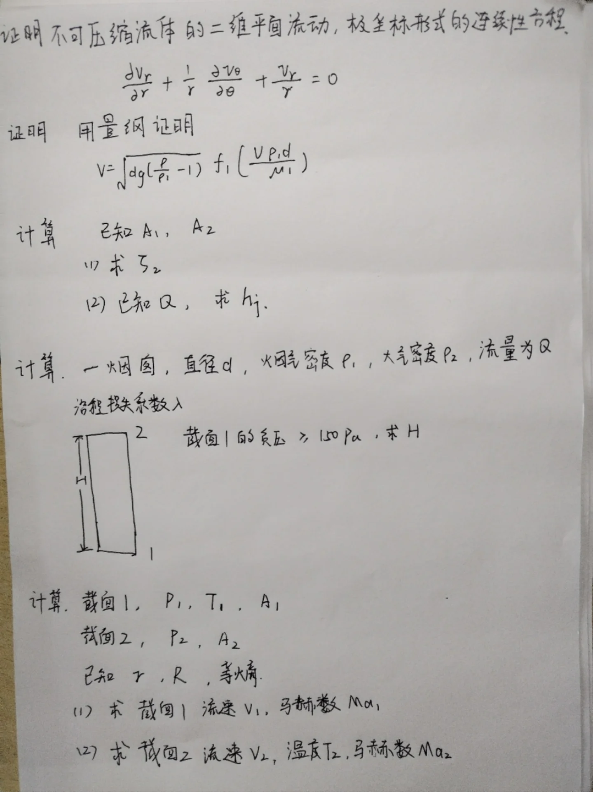
| 原题线索 | 放在讲义何处 |
|---|---|
| 证明二维极坐标连续性方程 | 第三章：连续性方程 |
| 由截面积求局部阻力系数 \(\zeta_2\)；已知 \(Q\) 求 \(h_j\) | 第四章：局部损失 |
| 烟囱密度差、沿程阻力与高度 \(H\) | 第四章：管路计算 |
| 已知两截面状态求速度、温度与马赫数 | 附录：等熵气流 |
| 证明沉降速度的量纲表达 | 第五章：量纲分析 |
第一章 · 流体的性质¶
章节概览
这一章要回答两个问题：流体和固体到底差在哪，以及流体内部的摩擦（黏性）怎么定量。考试主要考定义和单位（填空）、牛顿与非牛顿流体（问答），以及平板、圆盘、圆柱缝隙里的黏性力计算。
流体的定义与连续介质假设¶
流体的定义（填空高频）
流体是在任何微小剪切力作用下都会发生连续变形的物质。换句话说，静止的流体不能承受剪切应力。
固体受剪切力时，变形到一定程度就停下来，应力和变形量对应。流体只要受剪切力就一直变形（流动），切应力对应的是变形的快慢，也就是速度梯度。这是第一章最核心的一句话，后面的牛顿内摩擦定律就是它的定量版本。
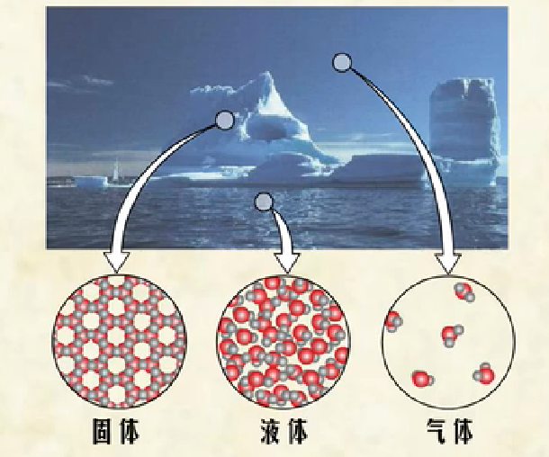
连续介质假设：不管分子之间的空隙，把流体看成连续充满空间的介质，于是密度、压强、速度都是空间和时间的连续函数，可以求导和积分。只要研究尺度远大于分子平均自由程（稀薄气体除外），这个假设就成立。
压缩性用体积弹性模量 \(K=-V\,\mathrm dp/\mathrm dV\) 描述，\(K\) 越大越难压缩。液体通常按不可压缩处理（\(\rho=\) 常数）；气体在低速（马赫数小于约 0.3）、压差不大时也可近似为不可压缩。
黏性与牛顿内摩擦定律¶
黏性是流体抵抗相邻流层相对滑动的性质，只有在流体运动、且各层速度不同时才表现出来。
把流体夹在两块平行板之间，下板不动、上板以速度 \(U\) 拖动。贴着板的流体随板一起运动（无滑移条件），中间各层速度线性变化。实验发现，拖动上板所需的单位面积力为
这就是牛顿内摩擦定律：切应力与速度梯度（剪切变形速率）成正比，比例系数 \(\mu\) 叫动力黏度。
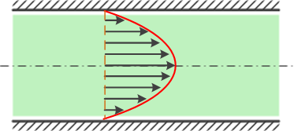
必背：两种黏度
| 定义 | 单位 | 用在哪 | |
|---|---|---|---|
| 动力黏度 \(\mu\) | \(\tau=\mu\,\mathrm du/\mathrm dy\) 中的比例系数 | \(\mathrm{Pa\cdot s}=\mathrm{N\cdot s/m^2}\) | 算切应力 |
| 运动黏度 \(\nu\) | \(\nu=\mu/\rho\) | \(\mathrm{m^2/s}\) | 算雷诺数 |
温度对黏度的影响（问答、填空常考）
液体：温度升高，黏度下降。液体黏性主要来自分子间的内聚力，升温后分子间距增大，内聚力减弱。
气体：温度升高，黏度上升。气体黏性主要来自分子热运动造成的层间动量交换，升温后热运动加剧，动量交换增强。
牛顿流体与非牛顿流体¶
牛顿流体：切应力与速度梯度成线性关系，且 \(\tau\)–\(\mathrm du/\mathrm dy\) 曲线过原点，也就是 \(\mu\) 只与温度、压强有关，与剪切快慢无关。水、空气、汽油、大多数低分子液体都是牛顿流体。
非牛顿流体：不满足上述线性关系，常见三类：
| 类型 | 特征 | 例子 |
|---|---|---|
| 塑性流体（宾汉流体） | 切应力超过屈服应力 \(\tau_0\) 后才开始流动，之后近似线性：\(\tau=\tau_0+\mu_p\,\mathrm du/\mathrm dy\) | 牙膏、泥浆、油漆 |
| 假塑性流体（剪切稀化） | 剪切越快，表观黏度越小 | 血液、高分子溶液、番茄酱 |
| 胀塑性流体（剪切增稠） | 剪切越快，表观黏度越大 | 浓淀粉浆、流沙 |
问答题答题要点：牛顿流体与非牛顿流体的区别
- 定义：是否满足 \(\tau=\mu\,\mathrm du/\mathrm dy\) 且 \(\mu\) 与剪切速率无关；
- 曲线：牛顿流体是过原点的直线，其余三类分别是有截距的直线、上凸曲线、下凹曲线（最好画一张 \(\tau\)–\(\mathrm du/\mathrm dy\) 草图）；
- 举例各一；
- 本课程的计算（含所有管流公式）默认牛顿流体。
表面张力与毛细现象¶
液面分子受力不对称，液面像一张绷紧的膜一样有收缩趋势。表面张力系数 \(\sigma\) 是液面上单位长度分界线受到的拉力，单位 \(\mathrm{N/m}\)，满足 \(F=\sigma l\)。
几个必背结果：
- 液滴（一个界面）内外压差 \(\Delta p=2\sigma/R\)；肥皂泡（内外两个界面）\(\Delta p=4\sigma/R\)。
- 毛细管内液面升高（管内径 \(d\)、接触角 \(\theta\)）：
推导只有一步：表面张力的竖直分量 \(\sigma\cos\theta\cdot\pi d\) 托起液柱重量 \(\rho g h\cdot\pi d^2/4\)，两者相等即得。\(\theta<90^\circ\)（水–玻璃，润湿）时液面上升；\(\theta>90^\circ\)（水银–玻璃，不润湿）时 \(h<0\)，液面下降。
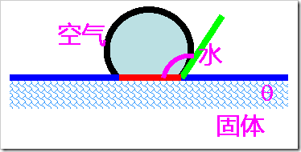
雷诺数¶
\(\mathrm{Re}\) 小，黏性占主导，流动稳定、分层，是层流；\(\mathrm{Re}\) 大，惯性占主导，小扰动会被放大，变成湍流。圆管的临界雷诺数取 \(\mathrm{Re}_c=2300\)（用管径 \(d\) 和断面平均流速 \(V\) 计算）。详见第四章。
两平板间的流动（典型问题）¶
这是提纲点名的「典型问题」，常见两种情形：
① 纯剪切流（库埃特流）：下板静止，上板以 \(U\) 运动，间距 \(h\) 很小，沿流向没有压差。速度线性分布，壁面切应力处处相同：
② 两板固定，靠压差推动（平面泊肃叶流）（11 月 3 日课上说不考，看懂就行）：
证明：两板间流动的速度分布¶
证明思路
假设：定常、不可压、二维、充分发展（\(u=u(y)\)，\(v=0\)），忽略重力。
取微元：长 \(\mathrm dx\)、高 \(\mathrm dy\)、单位宽度的流体微元。左右两面受压力，上下两面受切应力。
\(x\) 方向受力平衡（充分发展，没有加速度）：
代入 \(\tau=\mu\,\mathrm du/\mathrm dy\)，得 \(\mu\,\mathrm d^2u/\mathrm dy^2=\mathrm dp/\mathrm dx=\) 常数。积分两次：
边界条件（无滑移）：\(y=0\) 时 \(u=0\)；\(y=h\) 时 \(u=U\)（上板运动）或 \(u=0\)（上板固定）。解得通解
令 \(\mathrm dp/\mathrm dx=0\) 得情形①，令 \(U=0\) 得情形②。
第一章例题¶
缝隙类黏性题的统一套路：写出接触面上的局部速度 → 速度梯度 ≈ 速度/缝隙 → 切应力 → 乘面积得力（转动要再乘力臂得力矩）→ 功率 = 力 × 速度或力矩 × 角速度。
作业 2-9｜动力黏度换算为运动黏度
题目：某油的动力黏度 \(\mu=2.9\times10^{-4}\ \mathrm{Pa\cdot s}\)、密度 \(\rho=678\ \mathrm{kg/m^3}\)，求运动黏度。
解：
作业 2-12｜平行板剪切反求动力黏度
题目：两板间距 \(\delta=0.5\ \mathrm{mm}\)，上板以 \(U=0.25\ \mathrm{m/s}\) 匀速运动，每平方米需切向力 \(2\ \mathrm N\)。求 \(\mu\)。
解：单位面积的力就是切应力，\(\tau=2\ \mathrm{Pa}\)。线性速度分布 \(\tau=\mu U/\delta\)，所以
易错：先把 \(\mathrm{mm}\) 换成 \(\mathrm m\)。
作业 2-14｜由飞轮减速反求轴承油液黏度
题目：飞轮重 \(W=500\ \mathrm N\)、回转半径 \(k=0.30\ \mathrm m\)，轴承长 \(L=0.05\ \mathrm m\)、轴径 \(d=0.02\ \mathrm m\)、径向间隙 \(\delta=0.05\ \mathrm{mm}\)。转速 \(n=600\ \mathrm{r/min}\) 时角减速度 \(\alpha=0.02\ \mathrm{rad/s^2}\)。减速全部来自油的黏性阻力，求 \(\mu\)。
解：转动惯量与阻力矩为
轴面切应力 \(\mu\omega d/(2\delta)\)，面积 \(\pi dL\)，力臂 \(d/2\)：
易错：回转半径用于 \(I=mk^2\)，不是几何半径。
作业 2-16、2-17｜毛细管升高与降低
2-16：内径 \(10\ \mathrm{mm}\) 玻璃管插入 \(20^\circ\mathrm C\) 水中，\(\theta=10^\circ\)。用 \(h=4\sigma\cos\theta/(\rho gd)\)，约得 \(h=0.294\ \mathrm{cm}\)，液面上升。
2-17：内径 \(8\ \mathrm{mm}\) 玻璃管插入水银，\(\theta\approx140^\circ\)。\(\cos140^\circ<0\)，算得 \(h<0\)，表示液面下降约 \(1.36\ \mathrm{mm}\)。
易错：保留 \(\cos\theta\) 的符号，最后写明「上升」还是「下降」。
作业 2-7｜升温造成的体积流量变化
题目：\(70^\circ\mathrm C\) 的水以 \(Q_1=50\ \mathrm{m^3/h}\) 流入锅炉，升至 \(90^\circ\mathrm C\)，体积膨胀系数 \(\alpha_V=0.00064\ \mathrm{K^{-1}}\)，求出口体积流量。
解：质量流量不变，体积按 \(\alpha_V\Delta T\) 膨胀：
课件例题 1-2｜往复活塞的平均摩擦功率
题目：活塞长 \(L=10\ \mathrm{cm}\)、直径 \(d=8\ \mathrm{cm}\)，间隙 \(\delta=0.5\ \mathrm{mm}\)，油 \(\mu=0.09\ \mathrm{Pa\cdot s}\)。活塞位移 \(x=a\sin\omega t\)，\(a=20\ \mathrm{cm}\)，每分钟往复 \(n=360\) 次。求克服摩擦的平均功率。
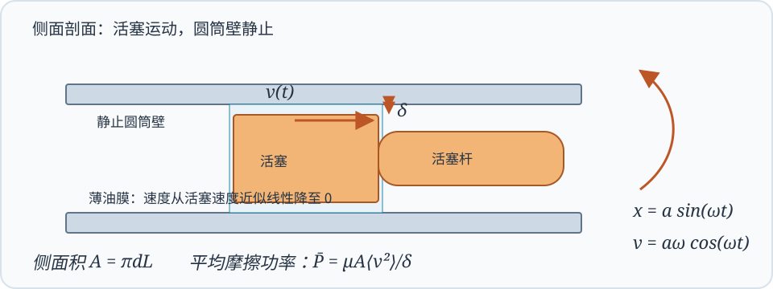
解：\(\omega=2\pi n/60=12\pi\ \mathrm{rad/s}\)，速度 \(v=a\omega\cos\omega t\)。摩擦力 \(F=\mu\dfrac{|v|}{\delta}\pi dL\)，瞬时功率 \(P=F|v|=\dfrac{\pi\mu Ld}{\delta}v^2\)。一个周期内 \(\overline{\cos^2}=1/2\)：
易错：求的是周期平均功率，不能直接代最大速度。
课件图 1-15｜同心圆柱旋转的阻力矩与功率
题目：直径 \(d\)、长 \(L\) 的轴在静止圆筒中以 \(\omega\) 转动，环隙 \(\delta\ll d\)，黏度 \(\mu\)。求阻力矩和功率。
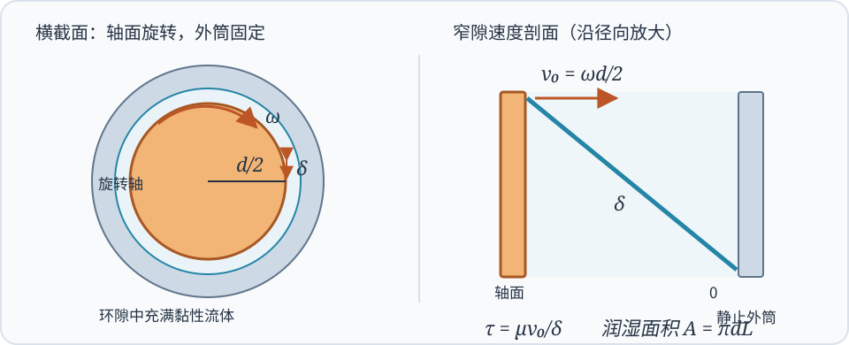
解：轴面速度 \(\omega d/2\) 处处相同，所以切应力也处处相同：
课件图 1-16｜圆盘缝隙中的黏性阻力矩
题目：直径 \(d\) 的圆盘以 \(\omega\) 转动，盘面与静止壁面间有缝隙 \(\delta\)，黏度 \(\mu\)。求一侧盘面的阻力矩。
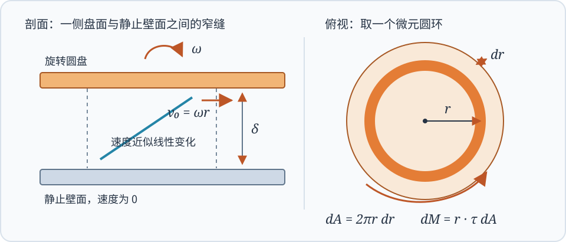
解：和圆柱不同，圆盘上不同半径处速度不同，必须取圆环积分。半径 \(r\) 处速度 \(\omega r\)，切应力 \(\tau=\mu\omega r/\delta\)。取宽 \(\mathrm dr\) 的圆环，面积 \(2\pi r\,\mathrm dr\)，力臂 \(r\)：
记忆：积分里的 \(r^3\) 来自三个 \(r\)——切应力 \(\propto r\)、环带面积 \(\propto r\)、力臂 \(=r\)。两面都有缝隙时力矩加倍。
第一章填空速记¶
- 流体在任意微小剪切力作用下都会连续变形；静止流体不能承受剪切应力。
- 牛顿内摩擦定律 \(\tau=\mu\,\mathrm du/\mathrm dy\)；\(\mu\) 单位 \(\mathrm{Pa\cdot s}\)；\(\nu=\mu/\rho\) 单位 \(\mathrm{m^2/s}\)。
- 温度升高：液体黏度降低，气体黏度升高。
- 表面张力系数单位 \(\mathrm{N/m}\)；毛细高度 \(h=4\sigma\cos\theta/(\rho gd)\)。
- \(\mathrm{Re}=\rho Vd/\mu\)，表示惯性力与黏性力之比。
- 常温水的运动黏度量级约 \(10^{-6}\ \mathrm{m^2/s}\)（\(20^\circ\mathrm C\) 时约 \(1.0\times10^{-6}\)）。
第二章 · 流体静力学¶
章节概览
静止流体里没有切应力，只有压强。这一章先证明静压强的两个特性，再由微元受力平衡推出压强随深度线性增加，最后算流体对平面、曲面的总压力。复习课说：重点是 \(p=p_0+\rho gh\) 的概念，其中 \(h\) 本质是 \(\Delta z\)；相对平衡和平面、曲面、浮力这几节看看就行，不用深挖。
静压强的两个特性¶
必背
- 方向性：静压强的方向总是垂直并指向作用面（内法线方向）。
- 大小与方向无关：静止流体中任一点的压强在各个方向上都相等，\(p_x=p_y=p_z=p_n\)。
特性 1 的理由：如果压强有切向分量，流体就会在切向力作用下变形（流动），与「静止」矛盾；压强也不可能是拉力，因为流体几乎不能受拉。
特性 2 的证明（老师手写稿第 1–2 页）：
证明：静压强各向同性
在静止流体中取一个三棱柱（楔形）微元：\(x\) 向边长 \(\Delta x\)、\(z\) 向边长 \(\Delta z\)、斜边长 \(\Delta s\)、垂直纸面宽 \(b\)，斜面与水平面夹角 \(\theta\)。三个面上的平均压强为 \(p_x,p_z,p_n\)。
微元静止、没有切应力，只受压力和重力 \(\frac12\rho g\,b\,\Delta x\,\Delta z\)：
由几何关系 \(\Delta s\sin\theta=\Delta z\)、\(\Delta s\cos\theta=\Delta x\)，化简得
令微元缩成一点（\(\Delta z\to0\)），得 \(p_x=p_z=p_n\)。由于 \(\theta\) 任意，静止流体中一点的压强与方向无关。
注：运动流体中有黏性应力，三个法向应力不再相等，这时把压强定义为三个法向应力的平均值的负值 \(p=-\frac13(\sigma_{xx}+\sigma_{yy}+\sigma_{zz})\)。
欧拉平衡方程与静压分布¶
压强本身不产生合力，压强的梯度才产生合力。取边长 \(\mathrm dx,\mathrm dy,\mathrm dz\) 的六面体微元，\(x\) 方向左面压力 \(p\,\mathrm dy\,\mathrm dz\)，右面压力 \((p+\frac{\partial p}{\partial x}\mathrm dx)\,\mathrm dy\,\mathrm dz\)，净压力为 \(-\frac{\partial p}{\partial x}\mathrm dx\,\mathrm dy\,\mathrm dz\)。三个方向合起来，单位体积受的净压力为 \(-\nabla p\)。
静止时它与单位体积的质量力 \(\rho\boldsymbol f\) 平衡：
这叫欧拉平衡微分方程。只受重力、\(z\) 轴竖直向上时 \(\boldsymbol f=(0,0,-g)\)：
液体密度不变，积分得静力学基本方程：
\(h\) 是测点在自由液面以下的深度，\(p_0\) 是液面压强。第二种写法的含义是：静止液体中各点的测压管水头（位置水头 + 压强水头）都相等。
静压分布的三条结论（老师红笔标注）
- 连续、均质的静止流体中，压强只随竖直深度变化，与容器形状无关；
- 同一水平面上压强相等（前提：同一种、连续的静止流体）；
- 压强随深度增加。
绝对压强、表压、真空度：
气体：密度随压强变，不能直接用 \(p_0+\rho gh\)。等温大气由 \(\rho=p/(RT)\) 积分得 \(p_2=p_1\exp[-g(z_2-z_1)/(RT)]\)。
帕斯卡定律¶
在密闭、连通的静止液体中，施加在液体边界上的压强增量 \(\Delta p\) 会等值地传到液体内各点。这是 \(p=p_0+\rho gh\) 的直接推论：\(p_0\) 增加 \(\Delta p\)，各点 \(p\) 都增加 \(\Delta p\)。
液压机原理：两活塞同高，\(\Delta p=F_1/A_1=F_2/A_2\)，所以 \(F_2=F_1A_2/A_1=F_1(d_2/d_1)^2\)。
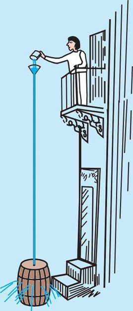
帕斯卡定律传递的是「增量」
帕斯卡定律说的是外加压强的增量处处相同，不是说不同深度处的总压强相同。
压强计¶
用液柱高度差测压差。做题只记一条规则：从已知压强点出发，沿连通液体一段段走到待求点，向下走加 \(\rho g\Delta h\)，向上走减 \(\rho g\Delta h\)，经过不同液体时换成该段液体的密度。
例如 U 形管一端接容器 A（流体密度 \(\rho_1\)），另一端开口，指示液密度 \(\rho_2\)：
演示题｜液压机举力
两活塞同高，\(d_1=2\ \mathrm{cm}\)、\(d_2=10\ \mathrm{cm}\)，小活塞施力 \(F_1=100\ \mathrm N\)。\(F_2=F_1(d_2/d_1)^2=2500\ \mathrm N\)。力放大 25 倍，大活塞的位移只有小活塞的 1/25，能量守恒。
平面上的静水总压力¶
复习课把这部分归为「看看就行」，会基本题即可，不用深挖。要求两样东西：总压力多大，作用在哪里（压力中心）。
必背结论
总压力等于形心处的压强乘面积，方向垂直指向平面。
\(y\) 沿平面从液面交线 \(O\) 量起。压力中心 \(D\) 总在形心 \(C\) 的下方（对称平面左右位置与形心相同）。
证明：平面总压力与压力中心¶
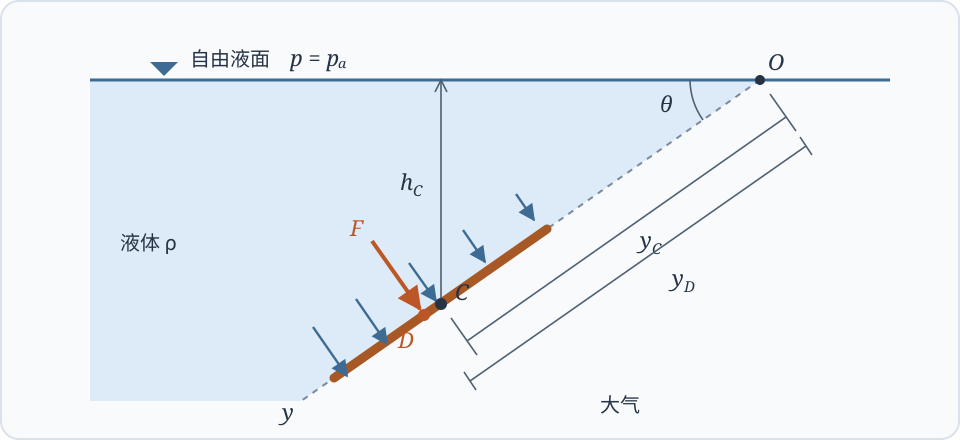
证明（老师手写稿第 10–11 页）
坐标：平面与水平面夹角 \(\theta\)，其延长线与自由液面交于 \(Ox\) 轴（垂直纸面）。\(y\) 轴沿平面向下。平面上坐标为 \(y\) 的点淹没深度 \(h=y\sin\theta\)。平面另一侧也是大气，所以只算表压。
总压力：取微元面积 \(\mathrm dA\)，受力 \(\mathrm dF=\rho gh\,\mathrm dA=\rho g\sin\theta\,y\,\mathrm dA\)。各微元力都垂直于平面，是平行力系，直接相加：
其中 \(\int_A y\,\mathrm dA=y_CA\) 是面积对 \(Ox\) 轴的静矩（面积矩）。
压力中心：由合力矩定理（合力对某轴之矩等于各分力对同轴之矩的和），对 \(Ox\) 轴取矩：
\(I_x=\int_A y^2\,\mathrm dA\) 是面积对 \(Ox\) 轴的惯性矩。两式相除，\(\rho g\sin\theta\) 约掉：
用平行移轴定理 \(I_x=I_C+y_C^2A\)（\(I_C\) 为对过形心且平行于 \(Ox\) 的轴的惯性矩）：
因为 \(I_C>0\)，所以 \(y_D>y_C\)，即 \(h_D>h_C\)：压力中心在形心下方。原因是越深压强越大，下半部分受力更多，合力作用点被「拉」了下去。
横向位置：同理对 \(y\) 轴取矩，\(x_D=I_{xy}/(y_CA)\)，\(I_{xy}\) 是惯性积。移轴后 \(x_D-x_C=I_{Cxy}/(y_CA)\)。平面关于过形心的竖直轴对称时 \(I_{Cxy}=0\)，所以 \(x_D=x_C\)。考试中的平面几乎都是对称的。
常用截面对形心轴的惯性矩（闭卷要背）
| 截面 | 面积 \(A\) | 形心位置 | \(I_C\)（对过形心的水平轴） |
|---|---|---|---|
| 矩形（宽 \(b\)、高 \(h\)） | \(bh\) | 高度中点 | \(\dfrac{bh^3}{12}\) |
| 圆（直径 \(d\)） | \(\dfrac{\pi d^2}{4}\) | 圆心 | \(\dfrac{\pi d^4}{64}\) |
| 三角形（底 \(b\)、高 \(h\)） | \(\dfrac{bh}{2}\) | 距底边 \(h/3\) | \(\dfrac{bh^3}{36}\) |
| 半圆（半径 \(r\)） | \(\dfrac{\pi r^2}{2}\) | 距直径 \(\dfrac{4r}{3\pi}\) | \(\approx0.1098\,r^4\) |
检验｜竖直矩形闸门，上边缘与水面齐平
高 \(b\)、宽 \(w\)。\(y_C=b/2\)，\(I_C=wb^3/12\)，\(A=wb\)：
压力中心在水下 \(2b/3\) 处，正好是三角形压强分布图的形心。用压强分布图法也能得到同样结果：三角形面积 \(\frac12\rho gb\cdot b\) 乘宽 \(w\) 就是 \(F\)，作用点在三角形形心。
典型计算｜圆形闸门的启门力矩
题目：倾角 \(\theta=60^\circ\) 的斜壁上有直径 \(d=1\ \mathrm m\) 的圆形闸门，闸门形心在水下 \(h_C=3\ \mathrm m\)。求总压力和压力中心沿斜面距形心多远。
解：\(A=\pi d^2/4=0.785\ \mathrm{m^2}\)，
\(y_C=h_C/\sin\theta=3.464\ \mathrm m\)，\(I_C=\pi d^4/64=0.0491\ \mathrm{m^4}\)：
压力中心比形心沿斜面低约 \(1.8\ \mathrm{cm}\)。规律：淹得越深，\(y_D-y_C\) 越小，压力中心越接近形心。
曲面上的静水总压力¶
曲面上各点压强方向不同，不能直接相加，所以先分解成水平和竖直两个分量分别积分（老师手写稿第 11–12 页）：
\(\mathrm dA_x\)、\(\mathrm dA_z\) 分别是微元在竖直面和水平面上的投影。积分得：
必背：曲面总压力
水平分力：等于曲面在竖直平面上的投影面积 \(A_x\) 所受的总压力（就是平面问题）：
作用线通过投影面 \(A_x\) 的压力中心。
竖直分力：等于压力体内液体的重量：
作用线通过压力体的形心。
合力：\(F=\sqrt{F_x^2+F_z^2}\)，与水平方向夹角 \(\alpha=\arctan(F_z/F_x)\)，作用线通过 \(F_x\)、\(F_z\) 两条作用线的交点。
压力体怎么画
压力体由三部分围成：曲面本身、自由液面（或其延长面）、过曲面边缘的铅垂面。
- 液体和压力体在曲面同侧（「实压力体」）：\(F_z\) 向下；
- 液体和压力体在曲面异侧（「虚压力体」，里面没有液体）：\(F_z\) 向上；
- 曲面形状复杂时，分段画压力体再叠加，方向相反的部分互相抵消。
压力体只是一个计算用的体积，里面不一定有液体。
典型计算｜四分之一圆柱面闸门
题目：半径 \(R=2\ \mathrm m\)、宽 \(b=3\ \mathrm m\) 的四分之一圆柱面闸门，挡水一侧水深恰好到闸门顶，圆心在水面上，闸门凸向水体之外，水在曲面上方。求总压力的大小和方向。
解：竖直投影面是 \(R\times b\) 的矩形，形心深度 \(R/2\)：
压力体就是曲面上方的四分之一圆柱水体，与水同侧，\(F_z\) 向下：
圆柱面上每点压力都垂直于曲面，也就是都通过圆心，所以合力作用线一定通过圆心。这是圆弧闸门题的一个常用检查。
浮力¶
阿基米德原理：浸在流体中的物体受到竖直向上的浮力，大小等于它排开流体的重量，作用线通过排开体积的形心（浮心）：
推导（手写稿第 13 页）：取一根竖直细柱穿过物体，上下表面压差 \((p_2-p_1)\mathrm dA_H=\rho g(z_1-z_2)\mathrm dA_H\)，对整个物体积分得 \(\rho gV\)。它其实就是曲面竖直分力的特例：下表面压力体减去上表面压力体，等于物体体积。
浮体稳定性：重心 \(G\)、浮心 \(B\)、定倾中心 \(M\)。\(M\) 在 \(G\) 之上（定倾高度 \(\overline{MG}>0\)）时产生恢复力矩，浮体稳定；\(M\) 在 \(G\) 之下则翻覆。
相对平衡：容器加速和旋转¶
复习课说这部分考得少，看看就行。下面的长例题时间不够可以跳过。
液体和容器一起做刚体运动时，液体内部没有相对运动、没有切应力，可以在随容器运动的坐标系里加上惯性力，当作「静止」处理：
等压面（包括自由液面）总是垂直于 \(\boldsymbol g-\boldsymbol a\) 的方向。
① 水平加速 \(a_x\)（竖直加速度 \(a_z\)）：自由液面倾斜，倾角 \(\tan\theta=\dfrac{a_x}{g+a_z}\)。
② 绕竖直轴等角速度旋转¶
证明：旋转液面是抛物面（手写稿第 16 页）
向心加速度 \(\boldsymbol a=-r\omega^2\boldsymbol e_r\)，代入 \(\nabla p=\rho(\boldsymbol g-\boldsymbol a)\)：
第一式对 \(r\) 积分得 \(p=\frac12\rho r^2\omega^2+f(z)\)。代入第二式得 \(f'(z)=-\rho g\)，故 \(f=-\rho gz+C\)。取轴心液面处 \((r,z)=(0,0)\) 时 \(p=p_0\)，则 \(C=p_0\)：
令 \(p=p_0\)（自由液面），得
自由液面是旋转抛物面。
这个公式算出的是表压还是绝对压强？由 \(p_0\) 决定
公式 \(p=p_0+\frac12\rho\omega^2r^2-\rho gz\) 本身不分表压、绝压，\(p_0\) 用什么，算出来的 \(p\) 就是什么。\(p_0\) 是原点（轴心、\(z=0\) 处）的压强。
| 情形 | \(p_0\) 取 | 算出的 \(p\) | 常用写法 |
|---|---|---|---|
| 开口容器，原点取在轴心自由液面 | \(p_a\) | 绝对压强 | \(p=p_a+\rho g\left(\dfrac{\omega^2r^2}{2g}-z\right)\) |
| 同上，但只关心比大气高多少 | \(0\) | 表压（计示压强） | \(p=\rho g\left(\dfrac{\omega^2r^2}{2g}-z\right)\) |
| 密闭容器，液面上方气体压强为 \(p_0\) | 气体压强（看题目给的是表压还是绝压） | 与 \(p_0\) 同类 | \(p=p_0+\rho g\left(\dfrac{\omega^2r^2}{2g}-z\right)\) |
| 容器充满、没有自由液面，已知某点压强 | 由该点代入求积分常数 | 与已知值同类 | 先写 \(p=\frac12\rho\omega^2r^2-\rho gz+C\)，再代入已知点 |
什么时候用表压：
- 题目问「计示压强」「表压」「压力表读数」：计示压强就是表压；
- 求作用在容器壁、顶盖上的总压力，而壁外是大气：大气压在壁的内外两侧同时作用、互相抵消，只有表压产生净力。习题 3-17 求螺栓拉力就是这种情况。
什么时候必须用绝对压强：
- 判断液体会不会汽化、断流（中心区域压强最低，要和饱和蒸汽压比较，蒸汽压是绝对压强）；
- 用到气体状态方程（如密闭容器上方气体被压缩，\(pV=\) 常数）；
- 壁的另一侧不是大气（例如两侧是不同压强的流体）。
易错：开口容器旋转时，中心液面下降、边缘上升，但自由液面上处处是大气压，所以自由液面上的表压处处为零。表压为负（真空）只会出现在密闭充满的容器内部，绝压则永远不能为负。
旋转容器题的体积守恒
旋转抛物面的体积等于同底同高圆柱的一半。所以对于半径 \(R\) 的圆筒，液面中心下降和边缘上升相对于原静止液面各为 \(\dfrac{\omega^2R^2}{4g}\)。题目问「转速多大时液体刚好溢出或刚好露底」就用这一条。
教材习题 3-17｜离心铸造车轮：边缘压强与螺栓群拉力
题目：离心铸造机铸造车轮。铁水密度 \(\rho=7138\ \mathrm{kg/m^3}\)，车轮尺寸 \(h=200\ \mathrm{mm}\)、\(d=900\ \mathrm{mm}\)。下箱由基座支承，上箱及其砂重 \(G=10\ \mathrm{kN}\)。转速 \(n=600\ \mathrm{r/min}\)，求车轮边缘处的计示压强和螺栓群 A–A 所受的总拉力。（答案：\(2864\ \mathrm{kPa}\)，\(905\ \mathrm{kN}\)）
① 压强分布：题目问「计示压强」，也就是表压。浇口通大气，原点取在轴心浇口的液面处，该处 \(r=0\)、表压 \(p=0\)，所以积分常数为零（若取绝对压强，常数就是 \(p_a\)）：
② 边缘压强：车轮上表面比原点低 \(h\)，即 \(z=-0.2\ \mathrm m\)，边缘 \(r=d/2=0.45\ \mathrm m\)：
③ 螺栓群拉力：只看上箱。下箱由基座托住，螺栓只负责拉住上箱。上箱受三个力：
| 力 | 方向 | 来源 |
|---|---|---|
| 铁水压力 \(F_p\) | 向上 | 型腔里的铁水顶着上箱内壁（车轮上表面） |
| 重力 \(G\) | 向下 | 上箱和砂子的自重 |
| 螺栓拉力 \(T\) | 向下 | 螺栓把上箱往下拉 |
上箱静止，所以 \(T=F_p-G\)。
为什么在「车轮上表面」积分，而不是「上箱内表面」？
它们是同一个面。离心铸造是往砂型里浇铁水，砂型中间挖出的空腔（型腔）就是车轮的形状。型腔的顶面从铁水一侧看是车轮上表面，从砂型一侧看就是上箱（连同型砂）的内表面。题解用铸件尺寸来定位它：比原点低 \(h=0.2\ \mathrm m\)，即 \(z=-0.2\)。
铁水接触的上箱内表面还有别的部分，但都不往上顶：
- 浇口和型腔的侧壁是竖直面，压力沿水平方向，绕一圈左右抵消；
- 分型面以下的型腔表面属于下箱，铁水把它往下压，由底座承担，与螺栓无关。
所以把上箱往上顶的，只有型腔朝下的面，也就是车轮上表面。真实车轮的轮毂常比轮辐厚，顶面是台阶状的，那就要每段面按各自的深度 \(z\) 分别积分再相加；教材把车轮简化成等厚圆盘，整个顶面都在 \(z=-0.2\)，一个积分就够了。
④ 求 \(F_p\)：为什么必须积分
「力 = 压强 × 面积」只在整块面积上压强都一样时才成立。这道题里上表面的压强
随半径 \(r\) 变化，而且变得非常剧烈：中心约 \(14\ \mathrm{kPa}\)，边缘约 \(2864\ \mathrm{kPa}\)，相差 200 倍。这时拿哪一个压强去乘面积都不对：
| 错误做法 | 结果 | 错在哪 |
|---|---|---|
| 中心压强 × 面积 | \(14\ \mathrm{kPa}\times0.636\ \mathrm{m^2}\approx8.9\ \mathrm{kN}\) | 把外圈的高压全忽略了，小了约 100 倍 |
| 边缘压强 × 面积 | \(2864\ \mathrm{kPa}\times0.636\ \mathrm{m^2}\approx1822\ \mathrm{kN}\) | 把内圈也当成最高压，大了约一倍 |
| 形心（圆心）压强 × 面积 | 同第一行 | 第二章 \(F=\rho gh_CA\) 能用形心，是因为那里压强随位置线性变化；这里压强随 \(r^2\) 变化，形心法失效 |
正确思路：把面积切成小块，让每一小块上的压强「几乎一样」，各自算力再相加。怎么切才能让每块上压强一样？压强只和 \(r\) 有关，所以同一个圆环上压强处处相同——按圆环切。
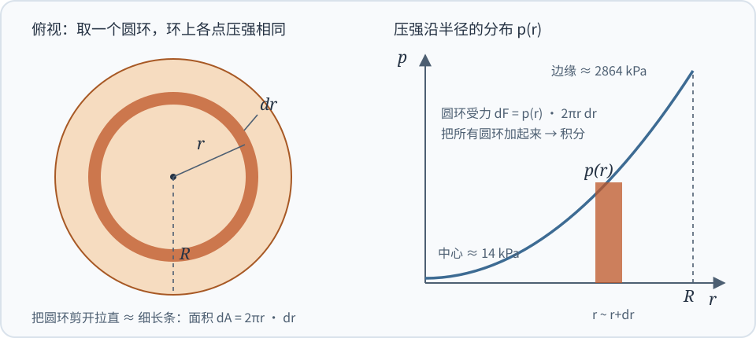
半径 \(r\)、宽 \(\mathrm dr\) 的圆环，剪开拉直近似是一根长 \(2\pi r\)、宽 \(\mathrm dr\) 的细条，面积 \(\mathrm dA=2\pi r\,\mathrm dr\)。这个圆环受的力就是「这一圈的压强 × 这一圈的面积」：
先用粗切法感受一下：把半径 \(0.45\ \mathrm m\) 切成 3 个圆环，每环用中间半径处的压强近似：
| 圆环 | 中间半径 | 该处压强 | 圆环面积 | 圆环受力 |
|---|---|---|---|---|
| \(0\sim0.15\ \mathrm m\) | \(0.075\ \mathrm m\) | \(93\ \mathrm{kPa}\) | \(0.071\ \mathrm{m^2}\) | \(6.6\ \mathrm{kN}\) |
| \(0.15\sim0.30\ \mathrm m\) | \(0.225\ \mathrm m\) | \(727\ \mathrm{kPa}\) | \(0.212\ \mathrm{m^2}\) | \(154\ \mathrm{kN}\) |
| \(0.30\sim0.45\ \mathrm m\) | \(0.375\ \mathrm m\) | \(1995\ \mathrm{kPa}\) | \(0.353\ \mathrm{m^2}\) | \(705\ \mathrm{kN}\) |
| 合计 | \(\approx865\ \mathrm{kN}\) |
已经接近答案了。切得越细，每环上的压强越接近真正的常数，结果越准；切成无穷多个无穷细的圆环，「求和」就变成了「积分」：
代入 \(\rho g=69952\)、\(\omega^2=3948\)、\(R=0.45\ \mathrm m\)：旋转项约 \(907.6\ \mathrm{kN}\)，静压项约 \(8.9\ \mathrm{kN}\)，合计 \(F_p\approx916.5\ \mathrm{kN}\)。
换个角度：这其实是压力体
被积函数括号里的 \(\dfrac{\omega^2r^2}{2g}+0.2\)，正好是从上箱内表面（\(z=-0.2\)）量到旋转抛物面 \(z=\dfrac{\omega^2r^2}{2g}\) 的竖直高度。抛物面就是液体在这个转速下假想的自由液面（压强为零的面）。所以
这就是曲面总压力里的压力体：静止时假想自由液面是水平面，旋转时变成了抛物面，思路完全一样。
从表里看出的规律
最外一环贡献了超过 80% 的力。原因是外圈压强大（\(p\propto r^2\)）且面积大（\(\mathrm dA\propto r\)），两者相乘，圆环受力 \(\propto r^3\)。这和圆盘缝隙题里阻力矩 \(\propto r^3\) 是同一个道理：凡是「某个量随半径变化、又要对整个圆面求总和」，都按圆环 \(2\pi r\,\mathrm dr\) 积分。
与答案 \(905\ \mathrm{kN}\) 相符，差别来自 \(g\)、\(\pi\) 的取值。
体会：旋转产生的压强远大于液柱静压（\(907\ \mathrm{kN}\) 对 \(9\ \mathrm{kN}\)），所以高速旋转时铁水几乎是在把上箱「甩开顶起」。某讲解视频板书最后写成 \(705000\ \mathrm N\)，是算术错误，方法本身没问题。
教材习题 3-19｜油水分层的旋转容器：临界转速与顶盖、底板压强
题目：圆柱形容器直径 \(d=600\ \mathrm{mm}\)、高 \(H=500\ \mathrm{mm}\)，盛水至 \(h=400\ \mathrm{mm}\)，余下的容积盛满密度 \(\rho_o=800\ \mathrm{kg/m^3}\) 的油，顶盖中心有一小孔与大气相通。容器绕主轴旋转，问转速 \(n\) 多大时油面开始接触底板？求此时顶盖和底板上的最大、最小计示压强。（提示：油水分界面为等压面。答案：\(157\ \mathrm{r/min}\)；顶盖 \(11270\ \mathrm{Pa}\)、\(0\)；底板 \(16173\ \mathrm{Pa}\)、\(3922\ \mathrm{Pa}\)）
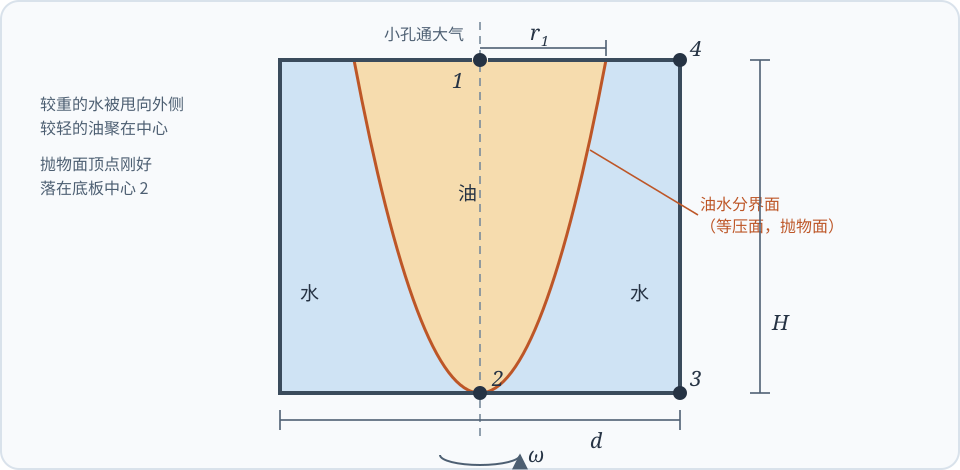
先想清楚发生了什么
- 容器装满、加盖，没有自由液面，液体只能在容器里重新分布。
- 旋转时离心作用把重的水甩到外侧，轻的油挤向中心。
- 「油面开始接触底板」指的是油水分界面往下凹，它的最低点（抛物面顶点）刚好碰到底板中心。
为什么分界面也是抛物面：旋转液体中任一种液体的压强都是 \(p=C+\frac12\rho\omega^2r^2-\rho gz\)，令 \(p=\) 常数，得等压面 \(z=\dfrac{\omega^2r^2}{2g}+\text{常数}\)，形状与密度无关。分界面上两种液体压强相等（题目提示的「等压面」），所以分界面就是这样一个抛物面。以底板中心为原点，顶点在原点：
① 由油的体积不变求 \(r_1\)
油原来是顶部厚 \(H-h\) 的一层圆柱；旋转后变成一个倒立的抛物体，顶点在底板中心，高 \(H\)，与顶盖交于半径 \(r_1\)。抛物体体积是同底同高圆柱的一半：
② 由分界面经过 \((r_1,H)\) 求转速
③ 四个关键点的计示压强
小孔通大气，所以顶盖中心 1 的表压为 0，这就是整个压强场的基准（参见上面「表压还是绝对压强」）。之后沿着同一种液体一段一段走，每走一段用该段液体的密度。
1 → 2：沿轴线竖直向下穿过油柱 \(H\)。轴线上 \(r=0\)，没有旋转项，就是普通的液柱静压：
2 → 3：沿底板水平向外走到边缘，\(z\) 不变，只有旋转项。底板上除中心一点外全是水：
3 → 4：沿侧壁竖直向上走 \(H\)，\(r\) 不变，只有静压项，仍在水中：
| 点 | 位置 | 所在液体 | 计示压强 |
|---|---|---|---|
| 1 | 顶盖中心 | 油 | \(0\) |
| 2 | 底板中心 | 油水交界 | \(3920\ \mathrm{Pa}\) |
| 3 | 底板边缘 | 水 | \(16170\ \mathrm{Pa}\) |
| 4 | 顶盖边缘 | 水 | \(11270\ \mathrm{Pa}\) |
结论（与答案的微小差别来自 \(g\) 取 9.8 还是 9.807）：
- 顶盖：最小 \(p_1=0\)（中心），最大 \(p_4\approx11270\ \mathrm{Pa}\)（边缘）；
- 底板：最小 \(p_2\approx3920\ \mathrm{Pa}\)（中心），最大 \(p_3\approx16170\ \mathrm{Pa}\)（边缘）。
为什么最小、最大都在中心和边缘：同一水平面上压强随 \(r\) 增大而增大（\(\frac12\rho\omega^2r^2\) 项），所以每块板上最小值在中心、最大值在边缘。
验算：分界面上油和水的压强必须相等
取分界面与顶盖的交点 \((r_1,H)\)：
- 从 1 沿顶盖走过去，全在油中：\(p=\frac12\rho_o\omega^2r_1^2=\frac12\times800\times16.5^2\times0.1897^2\approx3920\ \mathrm{Pa}\)；
- 从 2 走过去，全在水中：\(p=p_2+\frac12\rho_w\omega^2r_1^2-\rho_wgH=3920+4900-4900=3920\ \mathrm{Pa}\)。
两边相等，说明压强场接得上。考场上用这一步可以检查有没有用错密度。
易错点
- 从 2 走到 3 时必须用水的密度：底板上除了中心那一个点，其余全是水。用油的密度会得到错误的 \(p_3\)。
- 「油面接触底板」不是油跑到了底部外圈，而是中心的分界面顶点下降到底板。
- 不能直接用「中心下降、边缘上升各 \(\omega^2R^2/4g\)」那条结论：它针对的是开口容器的自由液面；这里容器加盖装满，要用油的体积守恒重新列式。
第二章填空速记¶
- 静压强方向垂直指向作用面；一点的静压强与方向无关。
- 欧拉平衡方程 \(\nabla p=\rho\boldsymbol f\)；重力场中 \(p=p_0+\rho gh\)，即 \(z+p/(\rho g)=\) 常数。
- 平面总压力 \(F=\rho gh_CA\)；压力中心 \(y_D=y_C+I_C/(y_CA)\)，在形心下方。
- 曲面：\(F_x=\rho gh_{C,x}A_x\)（投影面），\(F_z=\rho gV_p\)（压力体）。
- 浮力等于排开流体的重量，作用在浮心。
- 等速旋转液面 \(z=\omega^2r^2/(2g)\)，抛物面体积是同底同高圆柱的一半。
- 压强公式里的 \(p_0\) 取 \(p_a\) 得绝对压强，取 \(0\) 得表压；计示压强 = 表压；外侧为大气的壁面受力用表压，判断汽化用绝压。
第三章 · 理想流体动力学¶
章节概览
流体动起来以后，用三个守恒定律描述：质量守恒 → 连续性方程，动量守恒 → 欧拉方程/动量方程，能量守恒 → 伯努利方程。这章是全课的核心：物质导数必考，欧拉方程和伯努利方程必须会推，皮托管和文丘里管也要会推；计算题主要是伯努利 + 连续性的组合。动量方程和能量部分淡化，考概念为主。
理想流体与研究方法¶
理想流体（填空）
理想流体是忽略黏性（\(\mu=0\)）的假想流体。它运动时内部没有切应力，表面力只有压强。
系统与控制体：系统是一团固定的流体质点，跟着流体走，形状位置都会变；控制体是空间中固定的一块区域，流体从中流进流出。守恒定律本来是对系统写的，流体力学里更方便对控制体写，二者用雷诺输运定理联系：
控制体内的量的变化率 = 流进的 − 流出的 + 内部产生的
流量：通过面积 \(A\) 的体积流量 \(Q=\int_A\boldsymbol V\cdot\boldsymbol n\,\mathrm dA\)，质量流量 \(\dot m=\int_A\rho\boldsymbol V\cdot\boldsymbol n\,\mathrm dA\)。\(\boldsymbol n\) 取外法线，\(\boldsymbol V\cdot\boldsymbol n>0\) 表示流出。断面平均流速 \(V=Q/A\)。
手写稿例 3.4｜由速度剖面求平均流速
圆管内速度 \(u=U_0(1-r/R)^m\)，求平均流速。取圆环 \(\mathrm dA=2\pi r\,\mathrm dr\)：
\(m=1/2\)（近似层流）时 \(V\approx0.53U_0\)；\(m=1/7\)（湍流）时 \(V\approx0.82U_0\)。湍流剖面更「饱满」，平均速度更接近最大速度。
流线与迹线：流线是某一时刻处处与速度相切的曲线；迹线是一个质点走过的轨迹。定常流动中二者重合。
连续性方程（达朗贝尔定律）¶
老师把质量守恒的微分形式称为达朗贝尔（d'Alembert）连续性方程，18 世纪中期由他首先建立。
证明：连续性微分方程（手写稿第 5–6 页）
取控制体：在流场中取边长 \(\Delta x,\Delta y,\Delta z\) 的微小六面体，中心点 \(M\) 的速度 \((u,v,w)\)、密度 \(\rho\)。控制体固定不动。
\(x\) 方向净流入质量：左面中心的速度和密度为 \(u-\frac{\partial u}{\partial x}\frac{\Delta x}2\)、\(\rho-\frac{\partial\rho}{\partial x}\frac{\Delta x}2\)，右面为 \(u+\frac{\partial u}{\partial x}\frac{\Delta x}2\)、\(\rho+\frac{\partial\rho}{\partial x}\frac{\Delta x}2\)。面积很小，取面中心值作为全面的平均值。单位时间净流入：
（略去三阶小量。）同理，\(y\)、\(z\) 方向净流入为 \(-\frac{\partial(\rho v)}{\partial y}\Delta x\Delta y\Delta z\)、\(-\frac{\partial(\rho w)}{\partial z}\Delta x\Delta y\Delta z\)。
质量守恒：控制体体积不变，净流入的质量只能使其中密度增加，单位时间增量为 \(\frac{\partial\rho}{\partial t}\Delta x\Delta y\Delta z\)。令二者相等并约去体积：
特殊情形：
- 定常流动：\(\nabla\cdot(\rho\boldsymbol V)=0\)。
- 不可压缩流体（\(\rho=\) 常数，定常、非定常都成立）：
散度的物理意义（填空、问答）
速度的散度 \(\nabla\cdot\boldsymbol V\) 表示流体微团单位体积的体积变化率（相对膨胀率）。它的每一项都是一个方向的拉伸率，加起来就是体积变化的快慢。不可压缩流体的体积不能变，所以速度场的散度必须为零。看不懂可以先看下面的动画讲解。
一维总流（管流）形式：对一段流管，侧壁上 \(\boldsymbol V\cdot\boldsymbol n=0\)，只有两端断面有流量进出：
多进多出时：\(\sum\dot m_{\text{进}}=\sum\dot m_{\text{出}}\)。
散度：动画讲解与证明¶
英文配音，配中英字幕，约 3 分 40 秒。配音由开源模型 Fish Audio S2 Pro 生成。
动画里盯住一小块橙色流体，看它的面积怎么变（二维流动中，垂直纸面的厚度不变，面积就代表体积）。最该记住的一句话：散度只管体积，不管形状。
第一步：拆开符号。 \(\nabla=(\partial/\partial x,\ \partial/\partial y,\ \partial/\partial z)\) 是一组还没填对象的求导操作，\(\boldsymbol V=(u,v,w)\) 是三个方向的速度。点乘就是一一配对、相乘、相加：
每个速度只沿自己的方向求导，\(\partial u/\partial y\) 这种交叉项不进来。结果不是箭头，而是每个点上的一个数。
第二步：看每一项量的是什么。 取一小段长 \(\delta x\) 的流体。左端速度是 \(u\)，右端速度是 \(u+\dfrac{\partial u}{\partial x}\delta x\)，右端更快就会拉开距离。经过 \(\mathrm dt\)，多出来的长度是
除以原长 \(\delta x\)，再除以 \(\mathrm dt\)，剩下 \(\partial u/\partial x\)。所以它就是 \(x\) 方向的拉伸率：每米每秒长长多少。比如 \(u=2x\) 时，\(\partial u/\partial x=2\ \mathrm{s^{-1}}\)，每米长度每秒长 2 m。
第三步：把三个方向加起来。 三条边的拉伸率相加，就是体积的相对变化率。为什么是相加而不是相乘？单位正方形的两边变成 \(1+a\,\mathrm dt\) 和 \(1+b\,\mathrm dt\)，面积多出 \(a\,\mathrm dt\)、\(b\,\mathrm dt\) 两条和一个小角 \(ab\,\mathrm dt^2\)，小角是高阶小量，略去后只剩 \(a+b\)。
第四步：代入速度场算一遍。 下表每一行都是这样算的，比如 \(u=ax,\ v=-ay\) 时，\(\nabla\cdot\boldsymbol V=a+(-a)=0\)。
| 流动 | 速度场 | 散度 | 橙色方块 |
|---|---|---|---|
| 向四周散开 | \(u=ax,\ v=ay\) | \(2a>0\) | 变大 |
| 向中心汇聚 | \(u=-ax,\ v=-ay\) | \(-2a<0\) | 变小（只有可压缩流体才可能） |
| 一边拉长一边压扁 | \(u=ax,\ v=-ay\) | \(0\) | 形状变，面积不变 |
| 剪切 | \(u=ky,\ v=0\) | \(0\) | 歪成平行四边形，面积不变 |
| 整体旋转 | \(u=-\omega y,\ v=\omega x\) | \(0\) | 转动，面积不变 |
所以散度为零不等于流体不动、不变形，只是体积不变。剪切流 \(u=ky\) 里 \(u\) 确实在变，但它随 \(y\) 变，散度只问 \(u\) 随 \(x\) 怎么变，所以是零。
和管流连起来：水流进收缩管时，沿流动方向变快，微团被拉长；管壁收拢，微团变细。不可压缩时两者正好抵消，\(\partial u/\partial x>0\) 被 \(\partial v/\partial y<0\) 抵消，这就是 \(V_1A_1=V_2A_2\) 在一个点上的版本。
\(\nabla\cdot\boldsymbol V\) 和 \((\boldsymbol V\cdot\nabla)\) 别搞混
| 写法 | 名称 | 结果 |
|---|---|---|
| \(\nabla\cdot\boldsymbol V\) | 散度 | 导数已经作用在 \(\boldsymbol V\) 上，算完是一个数 |
| \(\boldsymbol V\cdot\nabla=u\dfrac{\partial}{\partial x}+v\dfrac{\partial}{\partial y}+w\dfrac{\partial}{\partial z}\) | 对流运算模板 | 还没算完，后面要接东西；接 \(u\) 得到一个数，接 \(\boldsymbol V\) 得到矢量 |
| \(\nabla p\) | 梯度 | 一个矢量 \((\partial p/\partial x,\ \partial p/\partial y,\ \partial p/\partial z)\) |
\(\nabla\) 在右边，就还要继续作用到后面的量上；\(\nabla\) 在左边，就已经作用完了。
证明题｜速度散度等于流体微团的相对体积变化率
题目：取边长为 \(\delta x,\delta y,\delta z\) 的微小六面体流体微团，体积 \(\delta V=\delta x\,\delta y\,\delta z\)，速度场为 \((u,v,w)\)。
（1）证明
（2）由此证明不可压缩流体满足 \(\nabla\cdot\boldsymbol V=0\)。
证明（1）：看 \(x\) 方向的边。左面速度为 \(u\)，右面速度为 \(u+\dfrac{\partial u}{\partial x}\delta x\)。经过 \(\mathrm dt\)，右面比左面多走 \(\dfrac{\partial u}{\partial x}\delta x\,\mathrm dt\)，所以边长变成
同理
三条边相乘，略去 \(\mathrm dt\) 的高阶小量：
由 \(\mathrm d(\delta V)=\delta V'-\delta V\)，两边除以 \(\delta V\,\mathrm dt\)：
证明（2）：微团由固定的流体质点组成，质量不变，\(\delta m=\rho\,\delta V=\) 常数。对时间求导：
两边除以 \(\rho\,\delta V\)，代入（1）的结果：
不可压缩流体的 \(\rho\) 不变，\(\mathrm d\rho/\mathrm dt=0\)，所以
得分点：边长变化的来历、略去高阶小量、质量守恒 \(\rho\,\delta V=\) 常数，这三步都要写出来。
练习｜判断速度场能否是不可压缩流动
做法：算 \(\dfrac{\partial u}{\partial x}+\dfrac{\partial v}{\partial y}\)，看是否恒等于零。
- (a) \(u=2x,\ v=-2y\)：\(2-2=0\)，可以；
- (b) \(u=x^2,\ v=y\)：\(2x+1\neq0\)，不可以；
- © \(u=-y,\ v=x\)：\(0+0=0\)，可以，这是整体旋转。
回忆题：极坐标连续性方程¶
本次不考
俞老师 11 月 3 日说本来想考这题，已经换题了。回忆卷里出现过，所以留着，以后学柱坐标时可以回头看。
年份未注明 · 证明｜二维极坐标连续性方程
原题（查看手写原图）：证明不可压缩流体二维平面流动的极坐标连续性方程
证明：取单位厚度的扇环微元，内半径 \(r\)、径向长 \(\mathrm dr\)、张角 \(\mathrm d\theta\)。
径向：内弧长 \(r\,\mathrm d\theta\)，流入 \(v_rr\,\mathrm d\theta\)；外弧长 \((r+\mathrm dr)\mathrm d\theta\)，流出 \((rv_r)+\frac{\partial(rv_r)}{\partial r}\mathrm dr\) 乘 \(\mathrm d\theta\)。净流出 \(\dfrac{\partial(rv_r)}{\partial r}\mathrm dr\,\mathrm d\theta\)。
周向：两条径向边长都是 \(\mathrm dr\)，净流出 \(\dfrac{\partial v_\theta}{\partial\theta}\mathrm d\theta\,\mathrm dr\)。
不可压缩，净流出为零。除以微元面积 \(r\,\mathrm dr\,\mathrm d\theta\)：
展开 \(\frac{\partial(rv_r)}{\partial r}=r\frac{\partial v_r}{\partial r}+v_r\)，即得原式。
易漏：\(v_r/r\) 这一项。它来自外弧比内弧长，即使 \(v_r\) 不变，流出的量也比流进的多。
质点加速度：局部 + 对流¶
一个流体质点 \(\Delta t\) 时间后从 \((x,y,z)\) 移到 \((x+\Delta x,y+\Delta y,z+\Delta z)\)，速度变化 \(\Delta\boldsymbol V=\frac{\partial\boldsymbol V}{\partial t}\Delta t+\frac{\partial\boldsymbol V}{\partial x}\Delta x+\cdots\)，而 \(\Delta x=u\Delta t\) 等。所以
物质导数（复习课：必考）
\(\mathrm d/\mathrm dt\) 跟着质点走，\(\partial/\partial t\) 站在固定点看，两者不相等。定常流动 \(\partial/\partial t=0\)，但 \(\mathrm d/\mathrm dt\) 不一定为 0：水流过收缩管，每个固定点的速度都不随时间变，质点却在加速。
局部加速度：固定空间点上速度随时间的变化，定常流动中为零。对流加速度：质点换了位置而引起的速度变化，例如定常流过收缩管时质点仍在加速。
欧拉运动微分方程¶
证明：欧拉方程（手写稿第 9–12 页）
取微元：边长 \(\Delta x,\Delta y,\Delta z\) 的六面体，中心 \(M\)。理想流体，忽略黏性，只受质量力和压力。
\(x\) 方向受力：质量力 \(\rho f_x\Delta x\Delta y\Delta z\)；压力：左面 \((p-\frac{\partial p}{\partial x}\frac{\Delta x}2)\Delta y\Delta z\)，右面 \((p+\frac{\partial p}{\partial x}\frac{\Delta x}2)\Delta y\Delta z\)，净压力 \(-\frac{\partial p}{\partial x}\Delta x\Delta y\Delta z\)。这一项的来历见伯努利动画和说明。
牛顿第二定律：
把加速度展开为局部 + 对流，三个方向合写：
矢量式：
左边是单位质量流体的惯性力（局部 + 对流），右边是单位质量的质量力和压差力。只适用于理想流体。令 \(\boldsymbol V=0\)，就退化成第二章的欧拉平衡方程。
从欧拉方程到黏性流体
再加上单位体积的黏性力 \(\mu\nabla^2\boldsymbol V\)，就得到不可压缩黏性流体的运动方程（纳维–斯托克斯方程）：\(\rho\boldsymbol a=-\nabla p+\rho\boldsymbol g+\mu\nabla^2\boldsymbol V\)。老师在第二章第 4 页写过这个式子。
积分形式的动量方程¶
复习课说能量、动量这部分淡化，尽量考概念。记住方程的含义和使用步骤，不用多刷题。
对任意固定控制体（体积 \(V\)，表面 \(A\)），控制体内动量的增加率 + 通过控制面净流出的动量 = 作用在控制体内流体上的合外力：
四项依次是：动量变化率、净流出动量、质量力、压力合力（\(\boldsymbol n\) 为外法线）。
定常、一进一出、断面上速度均匀时，简化成最常用的形式：
\(\sum\boldsymbol F\) 包括两端断面的压力、重力和固体壁面对流体的作用力。
动量方程解题四步
- 选控制体，把要求的固壁作用力包在控制面上；
- 设坐标，给未知力先假设一个方向；
- 分别写 \(x\)、\(y\) 方向的投影式，速度投影带正负号；
- 算出的是固壁对流体的力，题目问流体对固壁的力，要反号。
典型计算｜水平 90° 弯管的受力
题目：水平放置的 90° 等径弯管，管径 \(d\)，流量 \(Q\)，进口压强 \(p_1\)、出口压强 \(p_2\)（表压）。流体沿 \(+x\) 进入、沿 \(+y\) 流出，求水流对弯管的作用力。
解：\(V=4Q/(\pi d^2)\)，\(A=\pi d^2/4\)。设弯管对水的力为 \((R_x,R_y)\)。进口断面压力沿 \(+x\)，出口断面压力沿 \(-y\)（外法线为 \(+y\)）：
水对弯管的力与之反向：\(F_x=p_1A+\rho QV\)（沿 \(+x\)），\(F_y=-(p_2A+\rho QV)\)（沿 \(-y\)）。若题目只给 \(p_1\)，先用伯努利方程求 \(p_2\)（等径水平无损失时 \(p_2=p_1\)）。
伯努利方程¶
复习课版推导：沿流线取微元¶
老师在复习课上强调这版「必须走一遍，5 个条件很重要」。动画把每一项的来历都走了一遍，重点看压强项的泰勒展开和重力投影。英文配音，配中英字幕，约 5 分钟。配音由开源模型 Fish Audio S2 Pro 生成。
为什么混用 \(s\) 和 \(z\)
\(s\) 描述运动：质点沿流线走，一个方向就够，三个方程变成一个。\(z\) 描述重力：不管流线怎么弯，重力都竖直向下。\(\cos\theta=\partial z/\partial s\) 把两者接起来，问的只是「竖直的重力在 \(s\) 方向有多少」。
证明：伯努利方程（复习课版，五个条件）
取微元：沿流线取长 \(\mathrm ds\)、截面积 \(\mathrm dA\) 的微元，\(\mathrm dV=\mathrm ds\,\mathrm dA\)，中心压强为 \(p\)，\(s\) 方向与竖直向上的 \(z\) 轴夹角为 \(\theta\)。
① 理想流体（\(\mu=0\)）：侧面没有切应力，侧面压力又垂直于 \(s\)，所以沿 \(s\) 方向只有两端面的压力。端面距中心 \(\mathrm ds/2\)，一阶泰勒展开得两端压强，相减：
② 重力场：重量 \(\rho g\,\mathrm dV\) 竖直向下，沿 \(s\) 的分量为 \(-\rho g\cos\theta\,\mathrm dV\)。
牛顿第二定律，其中 \(u=u(s,t)\)，\(\dfrac{\mathrm du}{\mathrm dt}=\dfrac{\partial u}{\partial t}+u\dfrac{\partial u}{\partial s}\)：
③ 定常（\(\partial u/\partial t=0\)）：再用 \(u\dfrac{\partial u}{\partial s}=\dfrac{\partial(u^2/2)}{\partial s}\) 和几何关系 \(\mathrm dz=\mathrm ds\cos\theta\)，即 \(\cos\theta=\dfrac{\partial z}{\partial s}\)：
④ 均质不可压（\(\rho=\) 常数）：\(\rho\) 放进导数，三项合并：
⑤ 沿同一条流线积分：
\(\theta\) 的两种取法
这里的 \(\theta\) 是流线与竖直 \(z\) 轴的夹角，所以 \(\mathrm dz=\mathrm ds\cos\theta\)。下面手写稿版的 \(\theta\) 是流线与水平面的夹角，所以写成 \(\mathrm dz=\mathrm ds\sin\theta\)。两版结果相同，答题时画图标明即可。
压强项的 \(\frac{\partial p}{\partial x}\frac{\Delta x}{2}\) 怎么理解
\(p\) 是微元中心的压强，端面离中心半个边长。压强变化的快慢是 \(\partial p/\partial x\)，斜率 × 距离 = 变化量，所以两端面分别是 \(p\mp\frac{\partial p}{\partial x}\frac{\Delta x}{2}\)。例如中心 \(100\)、斜率 \(2\)、\(\Delta x=1\)，左面 \(99\)、右面 \(101\)。欧拉方程和这里是同一件事，只是把 \(s\) 换成 \(x\)，把 \(\mathrm dA\) 换成 \(\Delta y\Delta z\)。
手写稿版推导：流管动量方程¶
证明：伯努利方程（手写稿第 15–17 页）
取控制体：沿流线取一段微小流管，长 \(\mathrm ds\)，截面积 \(A\)，流线与水平面夹角 \(\theta\)，高程变化 \(\mathrm dz=\mathrm ds\sin\theta\)。假设截面上 \(\rho,V,p\) 均匀，忽略管壁摩擦（\(\tau=0\)）。
沿流线方向的力：
- 重力分量：\(-\rho gA\,\mathrm ds\sin\theta=-\rho gA\,\mathrm dz\)；
- 压力：两端压力加侧壁压力的轴向分量，合计 \(\approx-A\,\mathrm dp\)。
动量方程：合力 = 控制体内动量变化率 + 净流出动量：
展开右边，并利用连续性方程 \(\frac{\partial\rho}{\partial t}A\,\mathrm ds+\mathrm d\dot m=0\) 消去两项，剩 \(\rho A\frac{\partial V}{\partial t}\mathrm ds+\dot m\,\mathrm dV\)（\(\dot m=\rho AV\)）。两边除以 \(\rho A\)：
这是非定常、无摩擦流动沿流线的伯努利方程。
再加两个条件：定常（\(\partial V/\partial t=0\)）、不可压缩（\(\rho=\) 常数），沿流线从 1 积分到 2：
除以 \(g\) 得到水头形式：
伯努利方程的六个适用条件（填空必考，老师原话）
- 定常流动；
- 不可压缩流体；
- 无摩擦（无黏性）；
- 沿同一条流线（无旋流动时可推广到全流场）；
- 1、2 两点之间没有轴功（没有泵或涡轮）；
- 1、2 两点之间没有热量传递。
复习课按推导讲五个条件：理想、重力场、定常、均质不可压、沿流线，见下面的推导。答题时两种说法都写得出来最稳。
三个水头的意义：
| 项 | 名称 | 几何意义 | 物理意义（单位重量流体的……） |
|---|---|---|---|
| \(z\) | 位置水头 | 该点到基准面的高度 | 位能 |
| \(p/(\rho g)\) | 压强水头 | 测压管液面到该点的高度 | 压能 |
| \(V^2/(2g)\) | 速度水头 | 皮托管液面比测压管液面高出的高度 | 动能 |
| 三者之和 \(H\) | 总水头 | 皮托管液面到基准面的高度 | 总机械能 |
水头的单位是米，因为它是能量除以重量：\(\mathrm{J/N}=\mathrm m\)。例如动能 \(\frac12mV^2\) 除以 \(mg\) 就是 \(V^2/(2g)\)，它也等于以速度 \(V\) 竖直上抛能到达的高度。
伯努利方程的意思是：理想流体沿流线流动时，总机械能守恒，三种能量可以互相转换。能量形式 \(gz+\dfrac p\rho+\dfrac{V^2}{2}=C\) 每项是单位质量的能量，除以 \(g\) 得到的水头形式每项是单位重量的能量。
「测压管水头」有两种叫法
同一门课的资料里，这个词指的不是同一个量：
| 表达式 | 课件教材的叫法 | 老师手写稿和很多其他教材的叫法 |
|---|---|---|
| \(z\) | 几何高度、位置水头 | 位置水头 |
| \(\dfrac{p}{\rho g}\) | 测压管高度、测压管水头 | 压强水头 |
| \(\dfrac{V^2}{2g}\) | 测速管高度、速度水头 | 速度水头 |
| \(z+\dfrac{p}{\rho g}\) | 未单独命名 | 测压管水头（HGL） |
本页按手写稿的叫法。答题时名词后面跟上公式，比如「压强水头（测压管高度）\(p/\rho g\)」。填空问 \(p/\rho g\) 的名称时，填「压强水头」或「测压管高度」最稳。
有旋与无旋：有旋流动（\(\omega\neq0\)）只在同一条流线上总水头不变，不同流线的常数可以不同；无旋流动（\(\omega=0\)）整个流场各点总水头都相同。
测压管水头线与总水头线（手写稿第 19 页）：总水头线（EGL）高度为 \(z+p/\rho g+V^2/2g\)，用皮托管测；测压管水头线（HGL）高度为 \(z+p/\rho g\)，比 EGL 低一个速度水头，用测压管测。理想流体 EGL 水平；实际流体 EGL 因摩擦沿程下降，遇阀门等局部突降，遇泵突升。
与能量方程的关系：一进一出的定常能量方程比伯努利方程更一般，多了内能变化、传热、轴功和黏性功：
\(\alpha\) 是动能修正系数：截面速度不均匀时，用平均流速算的动能偏小，需乘 \(\alpha\) 修正。层流 \(\alpha=2.0\)，湍流 \(\alpha=1.04\sim1.11\)（常取 1）。
伯努利方程的应用¶
复习课点名：毕托管（皮托管）和文丘里管要会推导，两者都不考虑位置水头，用 \(\frac12\rho u^2+p=C\) 就能看出动压和静压的关系。
伯努利计算题四步
- 选两个断面：一个已知量多（如大水箱液面，\(V\approx0\)、\(p=p_a\)），一个包含待求量；
- 选基准面：一般取较低断面的中心所在水平面，让 \(z=0\)；
- 压强统一用表压或统一用绝对压强，大气中的出口取表压 \(0\)；
- 伯努利 + 连续性联立，两个方程解两个未知数。
伯努利方程里的 \(p\)：表压还是绝对压强？
两种都行，但方程两端必须用同一种。压强在方程里以差值 \(p_1-p_2\) 起作用，两端都换成绝对压强，等于同时加 \(p_a\)，一减就抵消了。
做题常用表压，更省事：通大气的地方（水池液面、管道出口）表压直接为 \(0\)。
| 情形 | 用什么 |
|---|---|
| 一般管路、水箱、小孔出流 | 表压，大气处取 \(0\) |
| 题目给表压、真空度、压力表读数 | 表压，真空度记为负值：真空 \(3\ \mathrm{kPa}\) 代 \(-3\ \mathrm{kPa}\) |
| 题目给绝对压强 | 两端都用绝对压强，或都换算成表压 |
| 判断会不会汽化（虹吸管顶、泵入口） | 绝对压强，要和饱和蒸汽压比较 |
| 可压缩气体、用到 \(p=\rho RT\) | 必须用绝对压强 |
最容易错的是混用：一端写 \(0\)，另一端写 \(101325\ \mathrm{Pa}\)，会差出一整个大气压（约 \(10.3\ \mathrm m\) 水柱）。答题时先写一句「压强均取表压」。
① 小孔出流（托里拆利公式）：大容器侧壁开小孔，孔中心在液面下 \(h\)。取液面 0–0 和孔口断面 1–1，基准面过孔口中心，两处都是大气压，容器截面远大于孔口，液面速度 \(\approx0\)：
实际出流有收缩和损失，\(V=\varphi\sqrt{2gh}\)，\(Q=\mu A\sqrt{2gh}\)（\(\varphi\) 为流速系数，\(\mu\) 为流量系数）。
② 皮托管测流速：头部正对来流开孔（总压孔 0），侧面开静压孔 1。流到 0 点的流体被完全滞止，\(u_0=0\)，该点压强 \(p_0\) 叫滞止压强（总压）。沿流线 0–1 列伯努利（两点高差可忽略）：
两孔接到 U 形压差计：同种流体测压管液面高差 \(\Delta h\) 时 \(u=\sqrt{2g\Delta h}\)；用密度 \(\rho'\) 的指示液时 \(p_0-p_1=(\rho'-\rho)g\Delta h\)，于是
③ 文丘里流量计：收缩段 → 喉部 → 扩散段，测进口 1 与喉部 2 的压差。水平放置，伯努利 + 连续性：
\(\mu\) 是流量系数，一般取 \(0.95\sim0.98\)，修正黏性损失和速度分布不均。
文丘里管不水平时
U 形管读数 \(\Delta h\) 给出的是测压管水头差 \((z_1+p_1/\rho g)-(z_2+p_2/\rho g)\)，不是纯压差。所以只要两个引压点接在同一根 U 形管上，上面的流量公式与管道是否倾斜无关。
手写讲义第 23 页｜文丘里管由压差求流量（符号解）
水平文丘里管，入口与喉部面积 \(A_1>A_2\)，压差 \(\Delta p=p_1-p_2\)，忽略损失：
若压差由密度 \(\rho_m\) 的指示液测得、液柱高差 \(h\)，则 \(\Delta p=(\rho_m-\rho)gh\)。实测流量乘 \(\mu\)。对照手写原图第 22–23 页。
典型计算｜虹吸管
题目：用虹吸管从大水池吸水，出口比水池液面低 \(H=3\ \mathrm m\)，管顶比液面高 \(h=2\ \mathrm m\)，忽略损失。求出口流速和管顶真空度。
解：液面 0 与出口 2（都是大气压）：\(V_2=\sqrt{2gH}=\sqrt{2\times9.81\times3}\approx7.67\ \mathrm{m/s}\)。
等径管内各处速度相同。液面 0 与管顶 1：
管顶真空度 \(p_v=\rho g\times5\approx49\ \mathrm{kPa}\)。真空度不能超过约 \(7\sim8\ \mathrm m\) 水柱，否则会汽化断流，这限制了虹吸高度。
④ 叶轮中的相对运动伯努利方程（手写稿第 23–24 页）：流体随叶轮以 \(\omega\) 旋转时，在旋转坐标系中多一项离心力的势：
外缘 \(R_2\) 比内缘 \(R_1\) 的机械能高 \(\frac{\omega^2}{2g}(R_2^2-R_1^2)>0\)：泵和风机的叶轮对流体做功，机械能增加；水轮机、汽轮机正好相反。
第三章作业例题¶
下面按红笔作业整理。4-13、4-15、4-18 是提纲重点题型（伯努利 + 连续性），优先做；4-34 的叶轮题不在提纲内。
作业 4-13｜喷嘴出流求截面压强
题目：直立圆管管径 \(d_1=10\ \mathrm{mm}\)，一端装有直径 \(d_2=5\ \mathrm{mm}\) 的喷嘴，喷嘴中心比圆管截面 ① 高 \(3.6\ \mathrm m\)，水流从喷嘴排入大气，出口速度 \(v_2=18\ \mathrm{m/s}\)。不计摩擦损失，求截面 ① 处所需的计示压强。（答案：\(1.87\times10^5\ \mathrm{Pa}\)）
解：连续性方程：
压强取表压，出口通大气，\(p_2=0\)。对截面 ① 和喷嘴出口列伯努利方程：
作业 4-15｜文丘里管流量与压强计读数的关系
题目：文丘里管进口、喉部直径为 \(d_1,d_2\)，U 形压强计指示液密度 \(\rho_m\)，读数 \(H\)，流体密度 \(\rho\)。推导体积流量与读数的关系。
解：两断面列伯努利方程：
由压强计沿液柱逐段列式，\(p_1-p_2=\rho g(z_2-z_1)+(\rho_m-\rho)gH\)，所以
左边的高差 \(z_2-z_1\) 被吸收了，这就是文丘里管倾斜也不影响结果的原因。代入 \(v_i=\dfrac{4q_V}{\pi d_i^2}\)：
作业 4-18｜变径管出流与测压管水头线
题目：敞口水池中的水沿截面变化的水平管道排出，质量流量 \(q_m=14\ \mathrm{kg/s}\)，三段管径 \(d_1=100\ \mathrm{mm}\)、\(d_2=75\ \mathrm{mm}\)、\(d_3=50\ \mathrm{mm}\)，不计损失。求所需水头 \(H\)、第二管段中央 \(M\) 点的压强，并绘制测压管水头线。（答案：\(2.59\ \mathrm m\)，\(2.04\times10^4\ \mathrm{Pa}\)）
解：\(q_V=q_m/\rho=0.014\ \mathrm{m^3/s}\)，\(v=\dfrac{4q_V}{\pi d^2}\)：
| 管段 | \(d/\mathrm m\) | \(v/(\mathrm{m/s})\) | \(v^2/2g\) \(/\mathrm m\) | 测压管水头 \(/\mathrm m\) |
|---|---|---|---|---|
| 第一段 | \(0.100\) | \(1.783\) | \(0.162\) | \(2.429\) |
| 第二段 | \(0.075\) | \(3.169\) | \(0.512\) | \(2.079\) |
| 第三段 | \(0.050\) | \(7.130\) | \(2.591\) | \(0\) |
所需水头：基准面取管轴。水池液面到出口，出口表压为 \(0\)：
\(M\) 点压强：
水头线：不计损失，总水头线是高度 \(H\) 的水平线。测压管水头 \(=z+\dfrac{p}{\rho g}=H-\dfrac{v^2}{2g}\)，每段是一条水平线，在变径处向下跳，到出口段降为 \(0\)。
规律：管子越细，速度水头越大，测压管水头线离总水头线越远。
作业 4-30｜射流冲击斜平板的分流
题目：射流冲击光滑斜平板后分成两股，沿下侧流动的流量为总流量的 \(45\%\)，求平板倾斜角 \(\theta\)。（答案：\(84^\circ15'\)）
解：不计损失，两股流速都等于来流速度 \(v_0\)（伯努利方程，压强都是大气压）。平板光滑，沿板面方向没有外力，所以该方向动量守恒：
\(q_{V1}=0.55q_V\)，\(q_{V2}=0.45q_V\)：
作业 4-34｜风机叶轮的速度三角形与扭矩（提纲外）
题目：风机叶轮内径 \(d_1=12.5\ \mathrm{cm}\)，外径 \(d_2=30\ \mathrm{cm}\)，叶片宽 \(b=2.5\ \mathrm{cm}\)，转速 \(n=1725\ \mathrm{r/min}\)，流量 \(q_V=372\ \mathrm{m^3/h}\)。空气径向流入，绝对压强 \(p_1=9.7\times10^4\ \mathrm{Pa}\)，气温 \(20^\circ\mathrm C\)，出口叶片角 \(\beta_2=30^\circ\)。按理想不可压缩流体，求入口叶片角 \(\beta_1\)、出口速度 \(v_2\) 和所需扭矩 \(M_z\)。（答案：\(43^\circ\)；\(20\ \mathrm{m/s}\)；\(0.348\ \mathrm{N\cdot m}\)）
入口：径向流入，\(v_{1u}=0\)：
出口：
扭矩：\(\rho=\dfrac{p_1}{RT}\approx1.154\ \mathrm{kg/m^3}\)，动量矩方程：
第三章填空速记¶
- 理想流体：忽略黏性，\(\mu=0\)。
- 连续性方程 \(\partial\rho/\partial t+\nabla\cdot(\rho\boldsymbol V)=0\)；不可压缩时 \(\nabla\cdot\boldsymbol V=0\)；一维 \(V_1A_1=V_2A_2\)。
- 散度 = 单位体积的体积变化率。
- 物质导数（必考）\(\mathrm d/\mathrm dt=\partial/\partial t+(\boldsymbol V\cdot\nabla)\)；定常时 \(\partial/\partial t=0\)，\(\mathrm d/\mathrm dt\) 不一定为 0。
- 加速度 = 局部加速度 \(\partial\boldsymbol V/\partial t\) + 对流加速度 \((\boldsymbol V\cdot\nabla)\boldsymbol V\)。
- 欧拉方程 \(\mathrm d\boldsymbol V/\mathrm dt=\boldsymbol f-\nabla p/\rho\)，适用于理想流体。
- 伯努利推导的五个条件：理想、重力场、定常、均质不可压、沿流线。
- 手写稿的六条件：定常、不可压、无摩擦、沿流线、无轴功、无传热。
- 伯努利方程的 \(p\) 用表压或绝对压强都行，但两端必须一致；真空度按负表压代入。
- 水头 = 单位重量流体的能量，单位 \(\mathrm m\)；有旋流动同一流线上总水头不变，无旋流动全场总水头相同。
- 名词别写错：文丘里管。
- 小孔 \(V=\sqrt{2gh}\)；皮托管 \(u=\sqrt{2(p_0-p)/\rho}\)；文丘里流量系数 \(0.95\sim0.98\)。
- 动能修正系数：层流 2，湍流约 1.05。
第四章 · 黏性流体的管内流动¶
章节概览
实际流体有黏性，流过管道会损失机械能。这一章的主线就是一个方程：黏性流体的伯努利方程 = 理想伯努利 + 水头损失 \(h_w\)。剩下的工作都是在算 \(h_w\)：先用雷诺数判断层流还是湍流，再算沿程损失 \(h_f=\lambda\frac ld\frac{V^2}{2g}\) 和局部损失 \(h_j=\zeta\frac{V^2}{2g}\)。圆管层流的推导是证明题的头号候选；计算题重点是用管路能量方程求流量。莫迪图不考，所以湍流题的 \(\lambda\) 大概率由题目给出。
管路问题要解决什么¶
老师在第四章开头说，管路计算无非两类：
- 已知管路（管长、管径、阀门、弯头……）和流量，求需要多大的压差（泵扬程）；
- 已知可用的压差，求能输送多大流量。
要算这些，关键是知道流动阻力，而阻力规律取决于流动状态（层流还是湍流），所以第一步永远是算雷诺数。
雷诺实验与流动状态¶
雷诺实验（1883）：水箱水位恒定，水经玻璃管流出，管口注入细股颜色水。
- 流速小：颜色水是一条清晰的直线，流体分层流动、互不掺混——层流；
- 流速增大到某值：颜色线开始摆动、弯曲——过渡状态；
- 流速再增大：颜色线断裂、迅速扩散到整个管截面，质点做不规则的横向脉动——湍流（紊流）。
同时测管段两端的水头损失 \(h_f\)：层流 \(h_f\propto V^{1.0}\)，湍流 \(h_f\propto V^{1.75\sim2}\)。同一根管子，损失随流速变化的规律不同，原因就是流动状态不同。
临界流速与临界雷诺数：层流转为湍流时的流速叫临界流速 \(V_c\)。实验发现 \(V_c\propto\mu/(\rho d)\)，所以把它组合成一个无量纲数，就是雷诺数：
对各种管径、各种流体，临界雷诺数都差不多，工程上取 \(\mathrm{Re}_c=2300\)：
为什么雷诺数能判断流态（问答要点）
\(\mathrm{Re}\) 是惯性力与黏性力之比。流动中总有小扰动：黏性力的作用是衰减扰动，惯性力的作用是放大扰动。\(\mathrm{Re}\) 小时黏性占上风，扰动被抑制，保持层流；\(\mathrm{Re}\) 大时惯性占上风，扰动被放大，转为湍流。
转捩还受扰动大小影响：极力消除扰动（入口光滑、管壁光滑、来流稳定），层流可以维持到 \(\mathrm{Re}\approx10^5\)。但 \(\mathrm{Re}<2300\) 时，任何扰动都会衰减，一定是层流。所以工程上取 2300 作为判据。平板边界层的临界雷诺数（以距前缘 \(x\) 计）约为 \(5\times10^5\)，与管流不同，不要混用。
手写稿例 6.1｜判断流态
题目：管径 \(d=200\ \mathrm{mm}\)，流量 \(Q=0.025\ \mathrm{m^3/s}\)。（1）流体为水，\(\nu=1.141\times10^{-6}\ \mathrm{m^2/s}\)；（2）流体为油，\(\nu=10^{-4}\ \mathrm{m^2/s}\)。判断流态。
解：
（1）\(\mathrm{Re}=\dfrac{0.796\times0.2}{1.141\times10^{-6}}\approx1.39\times10^5>2300\)，湍流。
（2）\(\mathrm{Re}=\dfrac{0.796\times0.2}{10^{-4}}\approx1592<2300\)，层流。
同样的管子和流量，黏度大的油是层流，水是湍流。结论：工程中的水、空气管流几乎都是湍流；高黏度油（润滑油、原油）的管流常为层流。
入口段：流体刚进管时速度均匀，边界层沿管长逐渐增厚，直到在管中心汇合，之后速度剖面不再变化，叫充分发展流动。入口段长度：
入口段内摩擦损失比充分发展段大，忽略它会低估压降。长管（\(l/d\sim1000\)）可以忽略，短管换热器等不能忽略。
黏性流体的伯努利方程¶
实际流体有黏性，流层之间、流体与管壁之间有摩擦，一部分机械能不可逆地转化为热能（损失掉），所以总机械能沿流动方向减少：
\(h_w\) 是单位重量流体从断面 1 到断面 2 的总水头损失，分两部分：
| 沿程损失 \(h_f\) | 局部损失 \(h_j\) | |
|---|---|---|
| 来源 | 流体与管壁、流层之间的摩擦，沿管长均匀分布 | 管件处（阀门、弯头、突扩、突缩）流动分离产生旋涡，旋涡耗散能量 |
| 公式 | 达西公式 \(h_f=\lambda\dfrac ld\dfrac{V^2}{2g}\) | \(h_j=\zeta\dfrac{V^2}{2g}\) |
| 系数 | 沿程阻力系数 \(\lambda\) | 局部阻力系数 \(\zeta\) |
有泵时左边加泵扬程 \(H_p\)，有涡轮时右边加涡轮取走的水头 \(H_t\)。
什么是总流：总流就是管道整个断面上的全部流体，可以看成无数根微元流束捆在一起。一根微元流束的断面无限小，断面上只有一个速度；总流的断面有限大，速度中心快、壁面为零，所以方程里用断面平均流速 \(V\)，并多出动能修正系数 \(\alpha\)。
\(\alpha\) 为什么存在：流量用平均流速算没有问题，但动能流量与速度的三次方有关，用平均流速算会偏小，\(\alpha\) 用来补上差额：
总流伯努利方程的适用条件（填空）
- 流动定常；
- 流体不可压缩；
- 作用在流体上的质量力只有重力；
- 列方程的两个过流断面上，流动必须是缓变流（流线近似平行、曲率半径很大）；
- \(\alpha\) 与断面流速分布有关，因而受流态影响：层流 \(\alpha=2\)，湍流 \(\alpha\approx1.01\sim1.15\)（手写稿写 \(1.04\sim1.11\)），工业管道一般取 \(\alpha\approx1\)。
方程的意义：断面 1 单位重量流体的机械能 = 断面 2 单位重量流体的机械能 + 两断面间单位重量流体的机械能损失。
缓变流的要求落到做题上就是：断面选在直管段或大水池液面，别选在弯头、阀门、突扩突缩处。缓变流断面上压强按静压分布，\(z+p/(\rho g)\) 是常数，所以取断面中心算即可。不满足缓变流条件的流动叫急变流。两断面之间可以有急变流，只要所选的两个断面本身是缓变流就行。
达西公式的来历（Darcy, 1858）：实验发现 \(h_f\) 与管长 \(l\) 成正比，与管径 \(d\) 成反比，并和速度水头有关，于是写成
它对层流和湍流都适用，区别只在 \(\lambda\) 怎么求。
为什么对层流、湍流都适用（课堂 OneNote 6.4）：对一段充分发展的倾斜圆管（长 \(\Delta L\)、半径 \(R\)）列动量方程，进出口速度相同，动量变化为零，压力、重力分量和壁面切应力平衡：
利用 \(\Delta z=\Delta L\sin\phi\)，再与黏性伯努利方程 \(h_f=\Delta z+\Delta p/(\rho g)\) 对比：
推导过程没有假设流态，所以达西公式普遍成立。量纲分析给出 \(\tau_w=F(\rho,V,\mu,d,\Delta)\)，即 \(\lambda=F(\mathrm{Re},\Delta/d)\)：沿程阻力系数只取决于雷诺数和相对粗糙度。课上 OneNote 记作 \(f\)，与本页的 \(\lambda\) 是同一个量。
圆管层流¶
老师的要求是推一遍抛物线，积一遍平均流速。俞老师 10 月 22 日讲完哈根–泊肃叶公式说“这个东西必考”，所以公式要记住，推导也要会。
结果速查
| 量 | 公式 |
|---|---|
| 切应力分布 | \(\tau=\dfrac{\Delta p}{l}\dfrac r2\)（线性，轴心为 0，壁面最大） |
| 速度分布 | \(u=\dfrac{\Delta p}{4\mu l}(R^2-r^2)\)（旋转抛物面） |
| 最大流速 | \(u_{\max}=\dfrac{\Delta pR^2}{4\mu l}\)（在轴心） |
| 流量（哈根–泊肃叶） | \(Q=\dfrac{\pi R^4\Delta p}{8\mu l}=\dfrac{\pi d^4\Delta p}{128\mu l}\) |
| 平均流速 | \(V=\dfrac{u_{\max}}{2}=\dfrac{\Delta pR^2}{8\mu l}\) |
| 沿程阻力系数 | \(\lambda=\dfrac{64}{\mathrm{Re}}\) |
| 沿程损失 | \(h_f=\dfrac{32\mu lV}{\rho gd^2}\)（与 \(V\) 的一次方成正比） |
证明：圆管层流的速度分布与哈根–泊肃叶定律（手写稿第 9–11 页）
假设：无限长水平直圆管，半径 \(R\)，定常、不可压、充分发展的层流。取柱坐标 \((r,\theta,z)\)，\(z\) 沿管轴：
- 没有径向流动，\(v_r=0\)；
- 轴对称，\(v_\theta=0\)；
- 管子无限长，任意两截面速度剖面相同，\(v_z=u(r)\)。
取控制体：与管同轴、半径 \(r\)、长 \(l\) 的流体圆柱，两端压强 \(p_1\)、\(p_2\)，侧面受切应力 \(\tau\)。忽略重力（水平管）。
受力平衡：定常且速度沿轴向不变，加速度为零，所以合力为零：
切应力沿半径线性分布，轴心为零，壁面最大 \(\tau_w=\frac{\Delta p}{l}\frac R2\)。这一步只用了受力平衡，层流、湍流都成立。
代入牛顿内摩擦定律：\(r\) 增大时 \(u\) 减小，所以加负号，\(\tau=-\mu\,\mathrm du/\mathrm dr\)：
边界条件：管壁无滑移，\(r=R\) 时 \(u=0\)，得 \(C=\frac{\Delta p}{4\mu l}R^2\)：
速度剖面是旋转抛物面。
流量：取半径 \(r\)、宽 \(\mathrm dr\) 的圆环，\(\mathrm dA=2\pi r\,\mathrm dr\)：
这就是哈根–泊肃叶定律：层流流量与压降成正比，与管径的四次方成正比。
平均流速：
沿程阻力系数：水平等径管，\(z_1=z_2\)、\(V_1=V_2\)，黏性伯努利方程给出 \(h_f=\Delta p/(\rho g)\)。由平均流速式得 \(\Delta p=8\mu lV/R^2=32\mu lV/d^2\)。与达西公式 \(h_f=\lambda\frac ld\frac{V^2}{2g}\) 对比：
层流的 \(\lambda\) 只与雷诺数有关，与管壁粗糙度无关；\(h_f=\frac{32\mu lV}{\rho gd^2}\propto V\)，与雷诺实验结论一致。
倾斜管怎么办
管道倾斜时重力有轴向分量，把以上各式中的 \(\Delta p\) 换成测压管水头差对应的压差 \(\Delta(p+\rho gz)\) 即可，形式完全不变。
四次方的工程含义
哈根–泊肃叶定律说 \(Q\propto d^4\)。1 根 \(d=10\ \mathrm{cm}\) 的管子与 4 根 \(d=5\ \mathrm{cm}\) 的管子总截面积相同，但在相同压降下，粗管的流量是 4 根细管总和的 4 倍（\(1\times10^4\) 对 \(4\times5^4\)）。粗管更省能。
湍流与沿程阻力系数¶
湍流的特点：质点有不规则的横向脉动，各层之间剧烈掺混。瞬时速度可分解为时均值 + 脉动值 \(u=\bar u+u'\)，脉动值的时均为零。
湍流切应力由两部分组成：
雷诺应力来自质点横向脉动造成的层间动量交换。普朗特混合长度理论（俞老师说不会考，了解即可）把它写成 \(-\rho\overline{u'v'}=\rho l^2\left(\frac{\mathrm d\bar u}{\mathrm dy}\right)^2\)，混合长度 \(l=ky\)（\(k\approx0.4\)）。
湍流管流的三层结构（从壁面往中心）：
- 黏性底层（层流底层）：紧贴壁面的极薄一层，脉动受壁面抑制，黏性切应力占主导，速度线性分布；
- 过渡层；
- 湍流核心：湍流切应力占主导，速度剖面平坦，满足对数律（不用记）\(\dfrac{u}{u_*}=2.5\ln\dfrac{u_*y}{\nu}+5.5\)，其中摩擦速度 \(u_*=\sqrt{\tau_w/\rho}\)。
湍流速度剖面比层流饱满得多，\(\mathrm{Re}\) 越大越平；壁面附近速度梯度很大，所以湍流的阻力远大于层流。平均流速与最大流速之比 \(V/u_{\max}\approx(1+1.33\sqrt\lambda)^{-1}\)：
| \(\mathrm{Re}\) | 层流 | \(4000\) | \(10^4\) | \(10^5\) | \(10^6\) | \(10^7\) |
|---|---|---|---|---|---|---|
| \(V/u_{\max}\) | \(0.5\) | \(0.79\) | \(0.811\) | \(0.849\) | \(0.875\) | \(0.893\) |
湍流压降对管径更敏感
光滑管用布拉休斯公式代入达西公式，可得 \(\Delta p\approx0.241\,L\rho^{3/4}\mu^{1/4}d^{-4.75}Q^{1.75}\)。流量一定时，湍流 \(\Delta p\propto d^{-4.75}\)，层流 \(\Delta p\propto d^{-4}\)。所以工程上降低泵压最有效的办法是加大管径，代价是管材成本上升。
水力光滑与水力粗糙¶
管壁粗糙凸起的平均高度叫绝对粗糙度 \(\Delta\)，\(\Delta/d\) 叫相对粗糙度。黏性底层厚度 \(\delta\) 随 \(\mathrm{Re}\) 增大而变薄，经验式
水力光滑与水力粗糙（概念要懂，公式不用背）
- 水力光滑管：\(\delta>\Delta\)，粗糙凸起完全淹没在黏性底层里，对湍流核心没有影响，管子「像光滑管一样」，\(\lambda\) 只与 \(\mathrm{Re}\) 有关；
- 水力粗糙管：\(\delta<\Delta\)，粗糙凸起伸进湍流核心，产生旋涡，\(\lambda\) 只与 \(\Delta/d\) 有关，与 \(\mathrm{Re}\) 无关（又叫阻力平方区，因为 \(h_f\propto V^2\)）；
- 两者之间为过渡区，\(\lambda\) 与 \(\mathrm{Re}\)、\(\Delta/d\) 都有关。
注意：「水力光滑」不是指管壁真的光滑。同一根管子，低 \(\mathrm{Re}\) 时 \(\delta\) 厚，可能是水力光滑管；高 \(\mathrm{Re}\) 时 \(\delta\) 变薄，就成了水力粗糙管。
沿程阻力系数计算公式¶
| 区域 | 雷诺数范围 | 公式 | 名称 |
|---|---|---|---|
| 层流 | \(\mathrm{Re}<2300\) | \(\lambda=64/\mathrm{Re}\) | 理论解 |
| 水力光滑 | \(4000<\mathrm{Re}<10^5\) | \(\lambda=\dfrac{0.3164}{\mathrm{Re}^{0.25}}\) | 布拉休斯公式 |
| 水力光滑 | \(4000<\mathrm{Re}<80\,d/\Delta\) | \(\dfrac1{\sqrt\lambda}=2\lg(\mathrm{Re}\sqrt\lambda)-0.8\)（\(\mathrm{Re}=5\times10^4\sim3\times10^6\)） | 普朗特–施利希廷 |
| 过渡区 | \(80\,d/\Delta<\mathrm{Re}<4160\,(d/2\Delta)^{0.85}\) | \(\dfrac1{\sqrt\lambda}=-2\lg\left(\dfrac{\Delta}{3.7d}+\dfrac{2.51}{\mathrm{Re}\sqrt\lambda}\right)\) | 科尔布鲁克 |
| 水力粗糙 | \(\mathrm{Re}>4160\,(d/2\Delta)^{0.85}\) | \(\lambda=\dfrac1{[2\lg(d/2\Delta)+1.74]^2}\) | 尼古拉兹 |
前三行里，层流 \(\lambda=f(\mathrm{Re})\)，光滑区 \(\lambda=f(\mathrm{Re})\)，过渡区 \(\lambda=f(\mathrm{Re},\Delta/d)\)，粗糙区 \(\lambda=f(\Delta/d)\)。这些公式来自尼古拉兹的人工粗糙管实验（把筛过的均匀沙粒贴在管壁上）。实际工业管道的粗糙不均匀，就用「当量粗糙度」折算：与某工业管有相同沿程损失系数的人工粗糙管的 \(\Delta\)。
莫迪图（Moody, 1944）以科尔布鲁克公式为基础，画出工业管道 \(\lambda\)–\(\mathrm{Re}\) 曲线族（每条曲线对应一个 \(\Delta/d\)），精度约 \(\pm15\%\)。图上从左到右依次是：层流直线 \(64/\mathrm{Re}\) → 临界过渡区 → 光滑管曲线 → 过渡区 → 完全粗糙区（曲线变水平）。复习课说莫迪图不考，知道 \(\lambda\) 取决于 \(\mathrm{Re}\) 和 \(\Delta/d\) 就够了。
管流计算的三类问题¶
课上 OneNote 6.5 把管内流动计算归成三类。俞老师明确说迭代法不考，莫迪图也不考，所以下面要查图、迭代的步骤看思路即可。考试更可能直接给 \(\lambda\)，或者是层流用 \(64/\mathrm{Re}\)。
| 类型 | 已知 | 求 | 做法 |
|---|---|---|---|
| ① 阻力计算 | \(d,L,V\)（或 \(Q\)）、物性 | \(h_f\) | 算 \(\mathrm{Re}\) → 查莫迪图得 \(\lambda\) → 达西公式，直接算 |
| ② 校核计算 | \(d,L,h_f\)、物性 | \(V\) 或 \(Q\) | \(\lambda\) 与 \(V\) 互相依赖，需要迭代 |
| ③ 设计计算 | \(Q,L,h_f\)、物性 | \(d\) | \(d\) 同时出现在 \(\lambda\)、\(\mathrm{Re}\)、\(\Delta/d\) 中，需要迭代 |
迭代法的套路
先假设一个 \(\lambda\)（湍流取 \(0.02\sim0.03\) 起步，完全粗糙管可直接用尼古拉兹公式的值）→ 由达西公式算 \(V\)（或 \(d\)）→ 算 \(\mathrm{Re}\)、\(\Delta/d\) → 查莫迪图或科尔布鲁克公式得新 \(\lambda\) → 重复，直到 \(\lambda\) 不再变化。一般两三步就收敛。
OneNote 例 6.9｜已知压头损失求流量（校核计算）
题目：油 \(\rho=950\ \mathrm{kg/m^3}\)、\(\nu=2\times10^{-5}\ \mathrm{m^2/s}\)，管径 \(d=0.3\ \mathrm m\)、管长 \(L=100\ \mathrm m\)，沿程损失 \(h_f=8\ \mathrm m\)，\(\Delta/d=0.0002\)。求平均流速和流量。
解：由达西公式
| 步 | 假设 \(\lambda\) | \(V=\sqrt{0.471/\lambda}\) | \(\mathrm{Re}=Vd/\nu\) | 查图得新 \(\lambda\) |
|---|---|---|---|---|
| 1 | \(0.014\) | \(5.80\ \mathrm{m/s}\) | \(87000\) | \(0.0195\) |
| 2 | \(0.0195\) | \(4.91\ \mathrm{m/s}\) | \(73700\) | \(0.0201\) |
| 3 | \(0.0201\) | \(4.84\ \mathrm{m/s}\) | \(72600\) | \(0.0201\)（收敛） |
OneNote 例 6.11｜已知流量和压头损失求管径（设计计算）
题目：同上种油，\(Q=0.342\ \mathrm{m^3/s}\)，\(L=100\ \mathrm m\)，\(h_f=8\ \mathrm m\)，粗糙度 \(\Delta=0.06\ \mathrm{mm}\)，求 \(d\)。
解：把 \(V=4Q/(\pi d^2)\) 代入达西公式，写成 \(\lambda\) 与 \(d\) 的关系：
第 1 步：设 \(\lambda=0.03\)，\(d=0.325\ \mathrm m\)，\(\mathrm{Re}\approx67000\)，\(\Delta/d=1.85\times10^{-4}\)，由科尔布鲁克公式得 \(\lambda\approx0.0203\)。
第 2 步：\(d=0.655\times0.0203^{1/5}=0.301\ \mathrm m\)，\(\mathrm{Re}=72500\)，\(\Delta/d=2.0\times10^{-4}\)，得 \(\lambda\approx0.0201\)，\(d=0.300\ \mathrm m\)。
与例 6.9 互为逆问题，结果一致。实际选管时取不小于计算值的标准管径。
非圆管：水力直径¶
本次不考
俞老师 11 月 3 日讲完这节时说“不会考你们的”，看懂思路即可。
对任意截面的直管重复上面的动量平衡，只是截面积 \(A\neq\pi R^2\)、被流体润湿的周长（湿周）\(\mathcal P\neq2\pi R\)：
与圆管公式比较，定义水力直径：
圆管 \(D_h=4\pi R^2/(2\pi R)=d\)，与管径一致。湿周要算上所有有切应力作用的壁面，例如环形管要加上内外两圈周长。用 \(D_h\) 代替 \(d\) 计算 \(\mathrm{Re}\)、\(\Delta/D_h\) 和达西公式：湍流时查莫迪图相当准确；层流时 \(\lambda\approx64/\mathrm{Re}_{D_h}\) 误差可达 \(\pm40\%\)。
例：两块无限宽平行平板，间距 \(2h\)。\(D_h=\lim_{b\to\infty}\dfrac{4(2bh)}{2b+4h}=4h\)。层流精确解为 \(\lambda=\dfrac{96}{\mathrm{Re}_{D_h}}\)（平均速度 \(V=\frac23u_{\max}\)），若直接套 \(64/\mathrm{Re}_{D_h}\) 会把阻力低估约 33%。
考试怎么用 λ
闭卷考试一般会直接给 \(\lambda\)，或者给出流态让你选公式。层流题一定用 \(64/\mathrm{Re}\)；题目说「光滑管」且 \(\mathrm{Re}\) 不太大就用布拉休斯。算之前先验证 \(\mathrm{Re}\)，确认公式适用。
局部损失¶
管道截面突变或流向改变处，主流与管壁分离，在死角处形成旋涡区。旋涡区内流体剧烈旋转、与主流掺混，把机械能耗散成热，这就是局部损失：
用哪个速度？
\(\zeta\) 必须和它所对应的速度配套使用。一般用下游（局部管件之后）的速度水头计算局部损失（提纲原话）。突然扩大除外，它常写成以上游速度为基准的 \(\zeta_1\)，见下面的推导。
证明：突然扩大的局部损失¶
证明（手写稿第 17–18 页，老师整页推导）
题设：圆管由直径 \(d_1\) 突然扩大到 \(d_2\)，面积 \(A_1\to A_2\)。取断面 1–1（突扩处）与断面 2–2（下游旋涡消失、流动恢复平顺处，约 \(5\sim8\,d_2\)）之间的流体为控制体。两断面距离短，忽略沿程损失；管道水平，\(z_1=z_2\)。
① 伯努利方程（含局部损失）：
② 动量方程：控制体左端面面积为 \(A_2\)，其中中心部分 \(A_1\) 受压强 \(p_1\)，环形部分 \(A_2-A_1\) 是旋涡区，实验表明该处压强也近似等于 \(p_1\)。右端面受 \(p_2A_2\)。忽略管壁摩擦：
左边化简为 \((p_1-p_2)A_2\)，再用 \(Q=V_2A_2\)，除以 \(\rho gA_2\)：
③ 代入①：
这叫包达–卡诺公式：突扩损失等于损失速度（速度差）的速度水头。
④ 化成阻力系数：由连续性 \(V_1A_1=V_2A_2\)，
特例：管道出口流入大水池，\(A_2\to\infty\)，\(\zeta_1=1\)，即出口损失等于出口处的全部速度水头。
各类管件的局部损失（OneNote 6.6）¶
局部损失出现在：① 管道入口、出口；② 突然扩大、突然缩小；③ 弯头、肘管、三通等管件；④ 阀门（全开或部分开启）；⑤ 渐扩、渐缩管。管件内部流动复杂，理论分析很难，\(\zeta\) 基本都靠实验测定：测出管件前后的压降 \(\Delta p\)，得 \(h_j=\Delta p/(\rho g)\)，再除以速度水头。\(\zeta\) 只取决于管件的几何形状，与 \(\mathrm{Re}\) 关系不大（表中数据都是湍流下测的）。
等效管长：把局部损失折算成一段直管的沿程损失，
于是单根管路的总损失可以写成
\(L\) 取沿管道轴线的全长，包括弯头部分的长度。
| 管件 | 规律或 \(\zeta\) |
|---|---|
| 锐缘入口（水池进管） | \(0.5\) |
| 出口（管道流入大水池） | \(1.0\) |
| 突然扩大 \(d\to D\) | \(\zeta=\left(1-\dfrac{d^2}{D^2}\right)^2\)（以小管速度为基准） |
| 突然缩小 \(D\to d\) | \(\zeta\approx0.42\left(1-\dfrac{d^2}{D^2}\right)\)（以小管速度为基准；有缩颈断面） |
| 弯头 | \(R/d\) 越大（弯得越缓）\(\zeta\) 越小；损失来自弯道处的流动分离和离心力引起的二次流 |
| 阀门 | 闸阀、截止阀（球阀）、角阀、旋启式止回阀、蝶阀各有手册值；部分开启时损失急剧增大 |
| 渐扩管（扩压器） | \(\zeta=1-\dfrac{d_1^4}{d_2^4}-C_p\)，\(C_p=\dfrac{p_2-p_1}{\frac12\rho V_1^2}\) 为压力恢复系数；总扩散角约 \(5^\circ\) 时损失最小，角度过大边界层分离，损失反而增大 |
突扩和突缩两式在 \(d/D\approx0.76\) 时数值相等；直径比更小（截面变化更剧烈）时，突扩的损失比突缩大。
回忆题：局部阻力系数与水头损失¶
年份未注明 · 计算①｜由两截面积求局部阻力系数
原题线索（查看手写原图）：已知 \(A_1,A_2\)，求 \(\zeta_2\)。原图没有管件形状。
解析：若是突然扩大、\(\zeta_2\) 以扩大后速度 \(V_2\) 为基准，直接套上面推导的结果：
考场上如果原题要求推导，就按突扩证明的①②③④写一遍。若是突缩、弯头、阀门，不能仅凭 \(A_1,A_2\) 用此式。
年份未注明 · 计算②｜已知流量求局部水头损失
原题线索：已知 \(Q\)，求 \(h_j\)。
解析：以断面 2 为基准，\(V_2=Q/A_2\)：
原图未给数值，只能写到符号答案。
局部损失详解例题¶
局部损失在题目里几乎不单独出现，它是能量方程里的一项。下面三题都按同一套步骤写，先看懂这三件事：
- \(\zeta\) 是倍数：\(\zeta=0.5\) 就是损失半个速度水头 \(V^2/2g\)。
- 总损失：\(h_w=h_f+h_j=\left(\lambda\dfrac ld+\sum\zeta\right)\dfrac{V^2}{2g}\)，沿程和局部相加。
- 出口怎么写看流体最后去哪：
| 出口情况 | 第 2 断面选在 | 方程里的“1” | 含义 |
|---|---|---|---|
| 喷向大气 | 管出口 | 出口速度水头 \(V^2/2g\) | 流体还带着这份动能离开 |
| 进入大容器 | 下游液面 | 出口损失 \(\zeta=1\) | 这份动能在容器里全部耗散 |
两种写法都只有一个“1”，不要同时写。常用系数：大容器进管道 \(\zeta=0.5\)，管道进大容器 \(\zeta=1\)，其他系数题目会给。
例 1｜水箱经管路喷向大气
题目：水箱液面恒定，高出管出口中心 \(H=8\ \mathrm m\)。管长 \(L=20\ \mathrm m\)，管径 \(d=50\ \mathrm{mm}\)，\(\lambda=0.03\)。管路有进口（\(\zeta=0.5\)）、两个弯头（每个 \(\zeta=0.3\)）和一个阀门（\(\zeta=2.0\)），末端喷向大气。求流速、流量和各项损失。
第 1 步：选断面和基准面。 断面 1 取水箱液面，断面 2 取管出口，基准面过管出口中心。这样选是因为这两处的压强都已知。
第 2 步：列黏性流体的伯努利方程。
第 3 步：逐项判断。
- \(z_1=H=8\ \mathrm m\)，\(z_2=0\)；
- 液面和出口都通大气，\(p_1=p_2=p_a\)，压强项抵消；
- 水箱很大，液面几乎不降，\(V_1\approx0\)；
- 出口流速就是管内流速，\(V_2=V\)。
方程化简为
第 4 步：写出 \(h_w\)。 管径不变，全程都是同一个 \(V\)：
第 5 步：解 \(V\)。 代入第 3 步的方程：
这里的 \(1\) 就是出口速度水头。解得
第 6 步：求流量。
第 7 步：求各项损失并验算。
验算：\(h_f+h_j+\dfrac{V^2}{2g}=5.96+1.54+0.50=8.0\ \mathrm m=H\)，对得上。
例 2｜两水箱之间的管路
题目：两个大水箱液面高差 \(H=5\ \mathrm m\)，用管长 \(L=40\ \mathrm m\)、管径 \(d=100\ \mathrm{mm}\) 的管子连接，\(\lambda=0.02\)。管路有进口（\(\zeta=0.5\)）和阀门（\(\zeta=3.0\)），管子淹没进入下游水箱。求流量。
第 1 步：选断面。 断面 1 取上游液面，断面 2 取下游液面，不是管出口。管出口的压强未知，液面的压强已知。基准面取下游液面。
第 2 步：列方程并逐项判断。
- \(z_1-z_2=H\)；
- 两液面都是大气压，压强项抵消；
- 两个液面速度都近似为零，所以方程里没有出口速度水头。
方程化简为
第 3 步：写出 \(h_w\)。 这次要算上出口损失 \(\zeta=1\)，因为流体进入大容器后，动能全部耗散：
第 4 步：解 \(V\) 和 \(Q\)。
和例 1 对比：例 1 方程里的“1”是出口速度水头，这题的“1”是出口损失。写法不同，但都只算一次。
例 3｜管径突然变大的串联管路
题目：水箱液面高出管出口中心 \(H=4\ \mathrm m\)。先接细管 \(d_1=50\ \mathrm{mm}\)、\(L_1=10\ \mathrm m\)、\(\lambda_1=0.03\)，再突然扩大接粗管 \(d_2=100\ \mathrm{mm}\)、\(L_2=10\ \mathrm m\)、\(\lambda_2=0.025\)，末端喷向大气。进口 \(\zeta=0.5\)，突然扩大损失 \(h_j=\dfrac{(V_1-V_2)^2}{2g}\)。求流量。
第 1 步：列方程。 液面到管出口，基准面过管出口中心。两处都是大气压，液面速度近似为零：
第 2 步：把所有损失列出来。 关键是每一项配对应的速度：
| 损失 | 公式 | 用哪个速度 |
|---|---|---|
| 进口 | \(0.5\dfrac{V_1^2}{2g}\) | 进口之后是细管，用 \(V_1\) |
| 细管沿程 | \(\lambda_1\dfrac{L_1}{d_1}\dfrac{V_1^2}{2g}\) | \(V_1\) |
| 突然扩大 | \(\dfrac{(V_1-V_2)^2}{2g}\) | 速度差 |
| 粗管沿程 | \(\lambda_2\dfrac{L_2}{d_2}\dfrac{V_2^2}{2g}\) | \(V_2\) |
第 3 步：用连续性统一速度。 方程里有两个未知速度，要用连续性消掉一个：
第 4 步：全部换成 \(V_2\)。 记 \(X=\dfrac{V_2^2}{2g}\)，则 \(\dfrac{V_1^2}{2g}=16X\)，\(\dfrac{(V_1-V_2)^2}{2g}=9X\)。
- 出口速度水头：\(X\)
- 进口：\(0.5\times16X=8X\)
- 细管沿程：\(0.03\times\dfrac{10}{0.05}\times16X=96X\)
- 突然扩大：\(9X\)
- 粗管沿程：\(0.025\times\dfrac{10}{0.1}X=2.5X\)
第 5 步：解方程。
第 6 步：求流量。
可以看到，细管沿程占了 \(96X\)，几乎决定了流量。串联管路的流量主要受最细那段限制。
管路系统计算¶
老师提示：关注流量相关的题目
解题主线：列断面 → 能量方程 → \(h_w=\left(\lambda\frac ld+\sum\zeta\right)\frac{V^2}{2g}\) → 解出 \(V\) → \(Q=VA\)。
按这个顺序练：作业 6-14、串联管路（老师例 2）、流量类补充习题。有层流可能时，算完要回头验算 \(\mathrm{Re}<2300\)。
管路计算题的通用步骤
- 选两个断面（通常是两个水池液面，或液面与出口），选基准面；
- 列黏性伯努利方程，把 \(h_w\) 写成 \(\sum\lambda_i\frac{l_i}{d_i}\frac{V_i^2}{2g}+\sum\zeta_j\frac{V_j^2}{2g}\)；
- 用连续性方程把各段速度都换成同一个速度（或流量）；
- 解出未知量，最后回头验算 \(\mathrm{Re}\)，确认 \(\lambda\) 取法正确。
单管路系统：求泵的功率¶
OneNote 例 E6.16｜两水池间抽水所需的泵功率
题目：用泵把水从水池 1（液面 \(z_1=20\ \mathrm{ft}\)）抽到水池 2（液面 \(z_2=120\ \mathrm{ft}\)），流量 \(Q=0.2\ \mathrm{ft^3/s}\)。管长 \(L=400\ \mathrm{ft}\)，管径 \(d=2\ \mathrm{in}=\frac{2}{12}\ \mathrm{ft}\)，\(\Delta/d=0.001\)，水 \(\nu=1.1\times10^{-5}\ \mathrm{ft^2/s}\)。沿途有锐缘入口、全开截止阀、\(12\ \mathrm{in}\) 半径弯管、标准 90° 弯头、半开闸阀、锐缘出口。求泵的功率。
解：取两池液面为断面 1、2，都是大气压，速度近似为零。黏性伯努利方程加上泵扬程 \(h_p\)：
管内流速 \(V=Q/A=0.2/[\frac\pi4(\frac2{12})^2]=9.17\ \mathrm{ft/s}\)。
局部阻力系数（查表）：锐缘入口 \(0.5\)、全开截止阀 \(6.9\)、弯管 \(0.15\)、90° 弯头 \(0.95\)、半开闸阀 \(2.7\)、出口 \(1.0\)，合计 \(\sum\zeta=12.2\)。
沿程阻力系数：\(\mathrm{Re}=Vd/\nu=1.39\times10^5\)，\(\Delta/d=0.001\)，查莫迪图得 \(\lambda=0.0216\)。
泵传给水的功率：\(P=\rho gQh_p\approx2300\ \mathrm{ft\cdot lbf/s}\approx4.2\ \mathrm{hp}\)（\(1\ \mathrm{hp}=550\ \mathrm{ft\cdot lbf/s}\)）。泵效率一般 \(70\%\sim80\%\)，所以泵的输入功率约需 \(6\ \mathrm{hp}\)。
要点：泵扬程 = 提升高度 + 全部水头损失。局部损失在这里占了不小的比例（\(\sum\zeta=12.2\)），不能忽略。
串联管路（老师例 2）¶
手写稿第 19 页｜水箱经三段串联管出流
题设：开口大水箱，液面比管道出口中心高 \(h\)。管道由三段组成，管长 \(l_i\)、管径 \(d_i\)、沿程阻力系数 \(\lambda_i\)，每段有局部阻力系数 \(\zeta_i\)。出口流入大气，出口断面 3 速度 \(V_3\)、面积 \(A_3\)。求流量。
列式：串联管路各段流量相同，\(Q=A_1V_1=A_2V_2=A_3V_3\)。以出口中心水平面为基准，液面（\(V\approx0\)，\(p=p_a\)）到出口（\(p=p_a\)）：
用 \(V_i=V_3A_3/A_i\) 全部换成出口速度：
\(\mu\) 叫管路流量系数。没有任何损失时 \(\mu=1\)，就回到小孔出流 \(\sqrt{2gh}\)。
串联与并联的规律
| 串联 | 并联 | |
|---|---|---|
| 流量 | 各段相同 \(Q=Q_1=Q_2=\cdots\) | 总流量等于各支路之和 \(Q=Q_1+Q_2+\cdots\) |
| 水头损失 | 总损失等于各段之和 \(h_w=\sum h_{w,i}\) | 各支路损失相等 \(h_{w1}=h_{w2}=\cdots\) |
并联的道理：各支路起点相同、终点相同，起点和终点之间的总水头差只有一个，所以每条支路的损失都等于这个差。
串联管路的一般式（OneNote 6.8）：三段管 \(A\to B\) 串联，
用 \(V_1d_1^2=V_2d_2^2=V_3d_3^2\) 全部换成 \(V_1\)。已知 \(Q\) 时可以直接算出各段 \(V_i\)、\(\mathrm{Re}_i\)、\(\lambda_i\)，再求总损失；已知总损失求 \(Q\) 时，\(\lambda_i\) 依赖 \(V_i\)，要迭代。
OneNote 例 6.18｜三根管并联，已知总损失求总流量
题目：A、B 间并联三根管，总水头损失 \(\Delta h_{AB}=20.3\ \mathrm m\)，忽略局部损失：
| 管 | \(L\) | \(d\) | \(\Delta/d\) |
|---|---|---|---|
| 1 | \(100\ \mathrm m\) | \(8\ \mathrm{cm}\) | \(0.003\) |
| 2 | \(150\ \mathrm m\) | \(6\ \mathrm{cm}\) | \(0.002\) |
| 3 | \(80\ \mathrm m\) | \(4\ \mathrm{cm}\) | \(0.005\) |
解：并联，每根管的损失都等于 \(20.3\ \mathrm m\)：
每根管单独迭代，初值取完全粗糙区的 \(\lambda\)：
- 管 1：\(\lambda=0.0262\Rightarrow V_1=3.49\ \mathrm{m/s}\)，\(\mathrm{Re}=2.73\times10^5\)，查图 \(\lambda=0.0267\Rightarrow V_1=3.46\ \mathrm{m/s}\)，\(Q_1=62.5\ \mathrm{m^3/h}\)；
- 管 2：\(\lambda=0.0234\Rightarrow V_2=2.61\ \mathrm{m/s}\)，\(\mathrm{Re}=1.53\times10^5\)，查图 \(\lambda=0.0246\Rightarrow V_2=2.55\ \mathrm{m/s}\)，\(Q_2=25.9\ \mathrm{m^3/h}\)；
- 管 3：\(\lambda=0.0304\Rightarrow V_3=2.56\ \mathrm{m/s}\)，\(\mathrm{Re}=1.0\times10^5\)，查图 \(\lambda=0.0313\Rightarrow V_3=2.52\ \mathrm{m/s}\)，\(Q_3=11.4\ \mathrm{m^3/h}\)。
对比：同样三根管若串联、总损失也是 \(20.3\ \mathrm m\)，流量只有约 \(10.2\ \mathrm{m^3/h}\)。相同损失下，并联管路的输送量约是串联的 10 倍。
三水库问题与管网¶
本次不考
老师说环路、管网这类多管系统不考。下面的并联例题可以看懂规律，不用多练。
三水库问题：三根管从三个水库汇到一个节点 J。节点处流量平衡 \(Q_1+Q_2+Q_3=0\)（规定流入节点为正），所以至少有一根管是流出节点的。各管道流量不同，但节点 J 的测压管水头 \(h_J=z_J+p_J/(\rho g)\) 只有一个（\(p_J\) 为表压）。水库液面都是大气压，对每根管：
\(z_i>h_J\) 的管流向节点，\(z_i<h_J\) 的管流出节点。解法：先猜 \(h_J\) → 算出各 \(V_i\)、\(Q_i\)（注意符号）→ 检查 \(\sum Q_i\) 是否为零，不为零就调整 \(h_J\) 重算。
管网（供水、供热、供气、供油管网）：不管多复杂，都遵循三条规律：
- 任一节点的净流量为零（质量守恒）；
- 任一闭合环路的净水头损失为零（沿环路走一圈回到原点，水头不变）；
- 每段管的损失都满足莫迪图（沿程）和局部损失的阻力关系。
与电路类比：流量 ↔ 电流，水头 ↔ 电压，第 1、2 条分别对应基尔霍夫电流定律和电压定律。
典型计算｜两支路并联的流量分配
题目：A、B 两点间并联两根管，管 1：\(l_1,d_1,\lambda_1\)；管 2：\(l_2,d_2,\lambda_2\)；总流量 \(Q\)。忽略局部损失，求各支路流量。
解：由 \(h_{f1}=h_{f2}\)，且 \(V_i=4Q_i/(\pi d_i^2)\)：
再与 \(Q_1+Q_2=Q\) 联立即可。规律：流量与 \(d^{5/2}\) 成正比，粗管分走大部分流量。
回忆题：烟囱高度与抽力¶
年份未注明 · 计算｜烟囱高度与抽力
原题线索（查看手写原图）：烟囱直径 \(d\)，烟气密度 \(\rho_1\)，大气密度 \(\rho_2\)，烟气流量 \(Q\)，沿程阻力系数 \(\lambda\)；底部截面 1 的负压需超过某阈值（手写数值疑为 \(150\ \mathrm{Pa}\)），求烟囱高度 \(H\)。
思路：烟囱能「抽」，是因为外面冷空气柱比里面热烟气柱重。底部外界压强比顶部高 \(\rho_2gH\)，烟囱内底部只需比顶部高 \(\rho_1gH\)，差值 \((\rho_2-\rho_1)gH\) 就是抽力，其中一部分被沿程摩擦消耗。
列式：截面 1 在底部，出口 2 与外界同压，忽略局部损失，两截面速度相同 \(V=4Q/(\pi d^2)\)。对烟气列 1→2 的黏性伯努利方程（压强形式）：
外界大气 \(p_{\text{外},1}=p_2+\rho_2gH\)。所以底部负压（抽力）：
要求 \(\Delta p\geq p_*=150\ \mathrm{Pa}\)：
分母必须为正，否则烟囱再高也达不到要求。原图缺 \(d,Q,\rho_1,\rho_2,\lambda\) 的数值，只能写到符号答案。
第四章作业例题¶
下面按红笔作业整理，都是沿程损失的基本题。做题顺序一样：先算 \(\mathrm{Re}\) 判断流态，再选 \(\lambda\)。
作业 6-7｜层流每米管长的沿程损失
题目：运动黏度 \(\nu=4\times10^{-5}\ \mathrm{m^2/s}\) 的流体在直径 \(d=1\ \mathrm{cm}\) 的管内以 \(v=4\ \mathrm{m/s}\) 流动，求每米管长的沿程损失。（答案：\(5.22\) 米流体柱每米）
解：
\(\lambda=64/\mathrm{Re}=0.064\)，取 \(l=1\ \mathrm m\)：
作业 6-9｜输油管出口压强
题目：输油管直径 \(d=150\ \mathrm{mm}\)，长 \(l=5000\ \mathrm m\)，出口端比进口端高 \(h=10\ \mathrm m\)，质量流量 \(q_m=15489\ \mathrm{kg/h}\)，油的密度 \(\rho=859.4\ \mathrm{kg/m^3}\)，进口油压 \(p_i=49\times10^4\ \mathrm{Pa}\)，\(\lambda=0.03\)。求出口油压 \(p_o\)。（答案：\(3.712\times10^5\ \mathrm{Pa}\)）
解：
等径管，两端速度水头相同，约掉。黏性伯努利方程：
作业 6-14｜油箱经细长管排油的流量
题目：长 \(l=15\ \mathrm m\)、直径 \(d=12\ \mathrm{mm}\) 的钢管排出油箱中的油，\(\rho=815.8\ \mathrm{kg/m^3}\)，\(\mu=0.01\ \mathrm{Pa\cdot s}\)，油面比管道出口高 \(H=2\ \mathrm m\)，求流量。
解：油的黏度大、管子细，先假设层流。忽略出口速度水头和局部损失，全部水头用于沿程损失：
验算：\(\mathrm{Re}=\dfrac{\rho vd}{\mu}\approx470<2300\)，确实是层流，假设成立。速度水头 \(v^2/2g\approx0.012\ \mathrm m\)，比 \(2\ \mathrm m\) 小得多，忽略合理。
注意：书后答案印作 \(54.29\ \mathrm{L/s}\)，单位有误，应为 \(54.3\ \mathrm{mL/s}\)。
流量类补充习题¶
这四题都是求流量或流速，和老师说的“关注流量题”对得上。优先做 6-35、6-38、6-17；6-25 要会列式，\(\lambda\) 的迭代不考。下面都取 \(g=9.8\ \mathrm{m/s^2}\)。局部损失没看过的话，先看局部损失详解例题。
习题 6-35｜封闭水箱经小孔出流
题目：封闭大水箱经直径 \(d=12.5\ \mathrm{mm}\) 的薄壁小孔定常出流，水头 \(H=1.8\ \mathrm m\)，流量 \(q_V=1.5\ \mathrm{L/s}\)，流量系数 \(C_q=0.6\)。求液面上气体的计示压强。
第 1 步：先求理想出流速度。 断面 1 取液面，断面 2 取孔口，基准面过孔口中心。计示压强是相对大气压的压强，孔口外为大气，所以 \(p_2\) 的计示压强为 \(0\)，液面为 \(p\)。液面速度近似为零：
和开口水箱的 \(V=\sqrt{2gH}\) 比较，液面气压相当于多了一段水头。
第 2 步：加上流量系数。 实际流量比理想值小，用 \(C_q\) 修正：
第 3 步：算孔口面积。 \(d=0.0125\ \mathrm m\)，\(q_V=0.0015\ \mathrm{m^3/s}\)：
第 4 步：反求速度项。
第 5 步：解 \(p\)。 两边平方再除以 \(2\)：
习题 6-38｜水箱侧壁的缩放管嘴
题目：水箱侧壁装一缩放管嘴，喉部直径 \(d=4\ \mathrm{cm}\)，\(H=3\ \mathrm m\)，大气压强 \(p_a=10.33\ \mathrm m\)（水柱），喉部压强 \(p_c=2.5\ \mathrm m\)（水柱）。收缩段损失不计，渐扩段损失按从 \(d\) 突扩至 \(d_1\) 时损失的 \(20\%\) 计算。求喉部流速 \(v_c\)、流量 \(q_V\)、出口流速 \(v_1\) 和出口直径 \(d_1\)。
先理解装置：水先经收缩段到喉部，流速最大、压强最低，再经渐扩段到出口。题目压强用水柱高表示，所以 \(p_a,p_c\) 可以直接和 \(H\) 相加减。这里的 \(H\) 是液面到管嘴中心的高度。
第 1 步：求喉部流速。 液面到喉部，基准面过管嘴中心。液面绝对压强为 \(p_a\)，速度近似为零；喉部绝对压强为 \(p_c\)；收缩段不计损失：
第 2 步：求流量。
第 3 步：写渐扩段损失。 从 \(d\) 突扩到 \(d_1\) 的损失是 \(\dfrac{(v_c-v_1)^2}{2g}\)，题目说按 \(20\%\) 算：
第 4 步：列液面到出口的方程。 出口通大气，压强和液面相同，抵消：
第 5 步：解一元二次方程。 两边乘 \(2g\)，代入 \(H=3\)、\(v_c=14.57\)：
展开：
取正根：
第 6 步：求出口直径。 由连续性 \(v_cd^2=v_1d_1^2\)：
书上答案写 \(v_c=14.85\ \mathrm{m/s}\)，疑似印刷错误：书上的流量 \(0.0183\ \mathrm{m^3/s}\) 除以喉部面积，得到的也是 \(14.57\ \mathrm{m/s}\)。
习题 6-25｜两段串联的输水管道
题目：输水管由两段串联，绝对粗糙度都是 \(\varepsilon=0.5\ \mathrm{mm}\)。第一段 \(l_1=800\ \mathrm m\)、\(d_1=150\ \mathrm{mm}\)，第二段 \(l_2=600\ \mathrm m\)、\(d_2=125\ \mathrm{mm}\)。水塔水头 \(H=20\ \mathrm m\)，不计局部损失，求阀门全开时的最大可能流量 \(q_V\)。
第 1 步：列方程。 管很长，沿程损失远大于出口速度水头，所以按题意水头全部用于克服沿程损失：
第 2 步：用流量表示速度。 串联各段流量相同，\(v_1=q_V/A_1\)，\(v_2=q_V/A_2\)：
第 3 步：确定 \(\lambda\)。 相对粗糙度 \(\varepsilon/d_1=0.0033\)，\(\varepsilon/d_2=0.004\)。按完全粗糙区取 \(\lambda_1\approx0.027\)，\(\lambda_2\approx0.028\)。考试不考这一步，一般直接给 \(\lambda\)。
第 4 步：代入。
第 5 步：解流量。
此时 \(v_1=0.96\ \mathrm{m/s}\)，\(v_2=1.39\ \mathrm{m/s}\)，速度水头约 \(0.1\ \mathrm m\)，远小于 \(20\ \mathrm m\)，第 1 步的略去合理。题目没给黏度，取 \(\nu=10^{-6}\ \mathrm{m^2/s}\) 精确迭代，结果约 \(16.7\ \mathrm{L/s}\)。
习题 6-17｜两容器间的光滑管
题目：油的密度 \(\rho=800\ \mathrm{kg/m^3}\)，黏度 \(\mu=0.069\ \mathrm{Pa\cdot s}\)，在连接两容器的光滑管中流动。管径 \(d=30\ \mathrm{cm}\)，管长 \(l=30\ \mathrm m\)，两液面高差 \(H=3\ \mathrm m\)。计及沿程和局部损失，求管内流量。
第 1 步：选断面。 取上、下游两个液面，这和例 2同一类。两液面都是大气压，速度都近似为零，方程化简为
第 2 步：写出损失。 题目没给 \(\zeta\)，用常用值：大容器进管道 \(\zeta_1=0.5\)，管道进大容器 \(\zeta_2=1\)。
第 3 步：先估一个 \(\lambda\)。 \(\lambda\) 取决于流态，而流态要知道 \(V\)。先取 \(\lambda=0.03\)：
第 4 步：判断流态。
是湍流。
第 5 步：算出 \(\lambda\) 并修正。 光滑管湍流用布拉修斯公式：
和估值几乎相同，代回第 2 步：
第 6 步：求流量。
注意两点：出口进入大容器时 \(\zeta_2=1\)，能量方程里不再单独写 \(V^2/2g\)。流态不能默认，油比水黏，但这题算出来是湍流。
水击¶
管道中阀门突然关闭，紧靠阀门的水先停下，压强骤增，这个高压区以压力波速 \(c\) 向上游传播，叫水击。取跟随波面运动的控制体，用动量方程可得压强升高（儒可夫斯基公式，手写稿第 22 页）：
\(V_0\) 是原流速。水中 \(c\) 约 \(1000\ \mathrm{m/s}\) 量级，所以 \(V_0=1\ \mathrm{m/s}\) 就能产生约 \(1\ \mathrm{MPa}\) 的压强升高。整个过程以 \(4l/c\) 为周期反复，因黏性和管壁变形逐渐衰减。工程上靠慢关阀门、设调压井来减轻水击。
边界层概念¶
本次不考
已确定不考。俞老师 10 月 27 日讲分离时说过“必考”，11 月 3 日改口说别的班没学过，放到下个月再考，以后者为准。
边界层
普朗特 1904 年提出：大 \(\mathrm{Re}\) 的流体（如水、空气）绕流物体时，黏性的影响只局限在紧贴物面的一薄层内，这一层叫边界层。边界层内速度从壁面的 0（无滑移）迅速增加到外流速度，速度梯度很大，黏性切应力不可忽略；边界层外速度梯度很小，可以当作理想流体处理。
边界层厚度 \(\delta\)：速度达到外流速度 \(99\%\)（\(u=0.99U\)）处到壁面的距离。
意义：把流场分成两部分，外部用理想流体理论（第三章），内部用简化的黏性方程。这解决了 18 世纪以来的「达朗贝尔佯谬」：理想流体理论算出圆柱绕流阻力为零（前后表面压强分布对称），而实验中阻力总是存在。阻力恰恰来自被理想流体理论忽略的那一薄层。
平板边界层：沿流向逐渐增厚，层流 \(\delta\propto x^{1/2}\)，湍流 \(\delta\propto x^{4/5}\)，湍流边界层增长更快。
边界层分离（以圆柱绕流为例）：
- 前驻点 A 到最高点 M：流速增大、压强减小（顺压梯度），压差推着边界层内流体前进；
- 过 M 点之后：流速减小、压强增大（逆压梯度）。边界层内近壁流体本来就因摩擦损失了动能，再要「爬坡」逆着压强增大的方向流，很快速度降到 0（分离点 S），之后甚至倒流；
- 边界层脱离壁面，在物体后方形成尾涡区。
边界层分离的条件
分离要同时满足两个条件：① 有黏性（近壁流体动能被摩擦消耗）；② 有逆压梯度（\(\mathrm dp/\mathrm dx>0\)）。平板顺流没有逆压梯度，不分离；圆柱、圆球后半部有逆压梯度，会分离。
圆柱绕流随 \(\mathrm{Re}\) 的变化：\(\mathrm{Re}<1\) 不分离，流线前后对称；\(\mathrm{Re}\approx4\sim40\) 后方出现一对附着的对称旋涡；\(\mathrm{Re}>40\) 旋涡周期性交替脱落，形成卡门涡街；\(\mathrm{Re}\) 再大，尾流变成湍流。
物体阻力的两个来源：
- 摩擦阻力：边界层内黏性切应力造成；
- 压差阻力（形状阻力）：边界层分离后，尾涡区压强低，物体前后压差造成。
两者都源于黏性。顺流平板几乎只有摩擦阻力；圆柱、圆球等钝体以压差阻力为主。流线型设计（如机翼、鱼形）就是为了推迟分离、减小压差阻力。
第四章填空速记¶
- 圆管临界雷诺数 \(\mathrm{Re}_c=2300\)；层流 \(h_f\propto V\)，湍流 \(h_f\propto V^{1.75\sim2}\)。
- 黏性伯努利方程多一项 \(h_w=\sum h_f+\sum h_j\)。
- 总流伯努利方程适用条件：定常、不可压缩、质量力只有重力、过流断面为缓变流。
- 达西公式 \(h_f=\lambda\frac ld\frac{V^2}{2g}\)；局部损失 \(h_j=\zeta\frac{V^2}{2g}\)，一般用下游速度水头。
- 圆管层流：速度抛物线分布，\(V=u_{\max}/2\)，\(Q=\pi R^4\Delta p/(8\mu l)\)，\(\lambda=64/\mathrm{Re}\)。
- 圆管中切应力沿半径线性分布，壁面最大。
- 动能修正系数：层流 \(2\)，湍流约 \(1.05\)。
- 水力光滑 \(\delta>\Delta\)，\(\lambda=f(\mathrm{Re})\)；水力粗糙 \(\delta<\Delta\)，\(\lambda=f(\Delta/d)\)。
- 突扩损失 \(h_j=(V_1-V_2)^2/2g\)；出口入水池 \(\zeta=1\)；锐缘入口 \(\zeta=0.5\)。
- 串联：流量相同、损失相加；并联：损失相同、流量相加。管网（不考）：节点净流量为零，环路净损失为零。
- \(\lambda=8\tau_w/(\rho V^2)\)；非圆管水力直径 \(D_h=4A/\mathcal P\)（不考）；等效管长 \(L_{eq}=\zeta d/\lambda\)。
- 层流 \(h_f\propto V\)，湍流 \(h_f\propto V^{1.75\sim2}\)；层流 \(Q\propto d^4\)。
- 管流三类问题：求损失（直接算）、求流量、求管径（后两类要迭代，迭代法不考）。
- 边界层（不考）：厚度定义为 \(u=0.99U\) 处；分离条件：黏性 + 逆压梯度。
第五章 · 量纲分析与相似原理¶
章节概览
很多流动问题列得出变量，解不出方程，只能做实验。量纲分析的用处是把几个有量纲的变量组合成少数几个无量纲数，减少实验次数，并告诉我们模型实验该怎么做才能推广到原型。考试可能出一道「用量纲分析证明某关系式」的证明题，填空考 \(\Pi\) 定理和相似准则数。
量纲与量纲一致性原理¶
基本量纲：流体力学（不涉及传热时）用三个：质量 \(M\)、长度 \(L\)、时间 \(T\)。其他量的量纲由它们导出：
| 量 | 量纲 | 量 | 量纲 | |
|---|---|---|---|---|
| 速度 \(V\) | \(LT^{-1}\) | 压强 \(p\) | \(ML^{-1}T^{-2}\) | |
| 加速度 \(g\) | \(LT^{-2}\) | 动力黏度 \(\mu\) | \(ML^{-1}T^{-1}\) | |
| 密度 \(\rho\) | \(ML^{-3}\) | 运动黏度 \(\nu\) | \(L^2T^{-1}\) | |
| 力 \(F\) | \(MLT^{-2}\) | 表面张力 \(\sigma\) | \(MT^{-2}\) | |
| 流量 \(Q\) | \(L^3T^{-1}\) | 功率 \(P\) | \(ML^2T^{-3}\) |
量纲一致性原理（量纲和谐原理）
一个正确的物理方程，各项的量纲必须相同。所以方程可以除以其中任一项，化成全部由无量纲项组成的形式。这是量纲分析能成立的根据，也是检查公式是否写错的最快办法。
Π 定理¶
白金汉 \(\Pi\) 定理
若一个物理过程涉及 \(n\) 个物理量，其中有 \(m\) 个基本量纲（一般 \(m=3\)），则这个过程可以用 \(n-m\) 个独立的无量纲数 \(\Pi_1,\Pi_2,\dots,\Pi_{n-m}\) 之间的关系来描述：
做题步骤：
- 列出所有相关物理量（包括待求量），共 \(n\) 个；
- 选 \(m\) 个重复变量（通常选 \(\rho\)、\(V\)、\(d\)，分别代表流体性质、运动、几何）。要求：彼此量纲独立，合起来包含 \(M,L,T\)，不选待求量；
- 其余每个变量与重复变量组成一个 \(\Pi=x\,\rho^aV^bd^c\)，令量纲为 1，解出 \(a,b,c\)；
- 写出 \(\Pi\) 之间的函数关系，把待求量所在的 \(\Pi\) 解出来。
典型例题｜管流压降的量纲分析
题目：光滑直管中压降 \(\Delta p\) 与流体密度 \(\rho\)、黏度 \(\mu\)、平均流速 \(V\)、管径 \(d\)、管长 \(l\) 有关。用 \(\Pi\) 定理求关系式。
解：\(n=6\)（\(\Delta p,\rho,\mu,V,d,l\)），\(m=3\)，有 \(3\) 个 \(\Pi\)。取 \(\rho,V,d\) 为重复变量。
\(\Pi_1=\Delta p\,\rho^aV^bd^c\)：
\(M:1+a=0\)；\(T:-2-b=0\)；\(L:-1-3a+b+c=0\)。解得 \(a=-1,b=-2,c=0\)，\(\Pi_1=\dfrac{\Delta p}{\rho V^2}\)（欧拉数）。
\(\Pi_2=\mu\,\rho^aV^bd^c\)：同理得 \(a=b=c=-1\)，\(\Pi_2=\dfrac{\mu}{\rho Vd}=\dfrac1{\mathrm{Re}}\)。
\(\Pi_3=l/d\)（几何比，直接写出）。
所以
实验表明 \(\Delta p\) 与 \(l\) 成正比，可写成 \(\dfrac{\Delta p}{\rho V^2}=\dfrac ld\,\varphi(\mathrm{Re})\)，即
这就是达西公式，并说明光滑管的 \(\lambda\) 只是 \(\mathrm{Re}\) 的函数。若考虑粗糙度 \(\Delta\)，再多一个 \(\Pi_4=\Delta/d\)，于是 \(\lambda=f(\mathrm{Re},\Delta/d)\)，与莫迪图一致。
典型例题｜圆柱绕流阻力
阻力 \(F_D\) 与 \(\rho,\mu,V,D\) 有关，\(n=5\)，有 2 个 \(\Pi\)：
左边整理为阻力系数 \(C_D\)，右边是 \(\mathrm{Re}\)。所以只要 \(\mathrm{Re}\) 相同，不同尺寸、不同流体的圆柱阻力系数都相同，一条 \(C_D\)–\(\mathrm{Re}\) 曲线就能概括所有实验。
Π 定理作业题¶
范老师 10 月 29 日布置这两题时说考试里会有类似的。题号是老版本书的，新版本编号不同。
作业 6-2（老版本书）｜球的运动阻力
题目：球在流体中作定常运动时，运动阻力 \(F\) 是流体密度 \(\rho\)、动力黏度 \(\mu\)、球半径 \(R\) 和相对速度 \(V\) 的函数。选 \(\rho,\mu,R\) 为循环量，用量纲分析法证明
解：物理量有 \(F,\rho,\mu,R,V\)，\(n=5\)；基本量纲 \(M,L,T\)，\(m=3\)，所以有 \(2\) 个 \(\Pi\)。各量量纲：
\(\Pi_1=F\rho^a\mu^bR^c\)：\(M:1+a+b=0\)；\(T:-2-b=0\)；\(L:1-3a-b+c=0\)。解得 \(a=1,b=-2,c=0\)，
\(\Pi_2=V\rho^a\mu^bR^c\)：\(M:a+b=0\)；\(T:-1-b=0\)；\(L:1-3a-b+c=0\)。解得 \(a=1,b=-1,c=1\)，
由 \(\Pi\) 定理 \(\Pi_1=f(\Pi_2)\)，得
作业 6-6（老版本书）｜圆球的沉降速度
题目：直径 \(d\)、密度 \(\rho\) 的圆球在密度 \(\rho_1\)、动力黏度 \(\mu_1\) 的流体中沉降，沉降速度 \(V=f(d,\rho,\rho_1,\mu_1,g)\)。选 \(\rho_1,d,V\) 为循环量，用量纲分析法写出沉降速度的表达式。
解：物理量有 \(V,d,\rho,\rho_1,\mu_1,g\)，\(n=6\)，\(m=3\)，所以有 \(3\) 个 \(\Pi\)。
\(\Pi_1=\rho\,\rho_1^ad^bV^c\)：\(\rho\) 与 \(\rho_1\) 量纲相同，直接得
\(\Pi_2=\mu_1\rho_1^ad^bV^c\)：\(M:1+a=0\)；\(T:-1-c=0\)；\(L:-1-3a+b+c=0\)。解得 \(a=-1,b=-1,c=-1\)，
\(\Pi_3=g\rho_1^ad^bV^c\)：\(M:a=0\)；\(T:-2-c=0\)；\(L:1-3a+b+c=0\)。解得 \(a=0,b=1,c=-2\)，
由 \(\Pi\) 定理，\(\Pi_3\) 是 \(\Pi_1,\Pi_2\) 的函数，解出 \(V\)：
这题和下面的回忆题是同一类。回忆题再用“重力减浮力”把密度合并成 \(\rho_s/\rho_f-1\)，所以函数里只剩雷诺数。
回忆题：沉降速度的量纲表达¶
年份未注明 · 证明｜沉降速度的量纲表达
原题线索（查看手写原图）：用量纲法说明物体在流体中的沉降速度 \(V\) 可写成
\(\rho_s\) 为物体密度，\(\rho_f\)、\(\mu_f\) 为流体密度和黏度，\(d\) 为物体特征尺寸，\(f\) 为未知函数。
证明：
- 列变量：匀速沉降时，物体的有效重量（重力减浮力）只通过 \((\rho_s-\rho_f)g\) 这个组合起作用，记作一个变量 \(\Delta\gamma=(\rho_s-\rho_f)g\)，量纲 \(ML^{-2}T^{-2}\)。相关量为 \(V,d,\rho_f,\mu_f,\Delta\gamma\)，\(n=5\)，\(m=3\)，有 2 个 \(\Pi\)。
- 重复变量取 \(\rho_f,V,d\)。
- \(\Pi_1=\mu_f\rho_f^aV^bd^c\)，解得 \(\Pi_1=\dfrac{\mu_f}{\rho_fVd}\)，即 \(1/\mathrm{Re}\)。
- \(\Pi_2=\Delta\gamma\,\rho_f^aV^bd^c\)：\(M:1+a=0\)；\(T:-2-b=0\)；\(L:-2-3a+b+c=0\)，得 \(a=-1,b=-2,c=1\)，
- 由 \(\Pi\) 定理 \(\Pi_2=F(\mathrm{Re})\)，解出 \(V\)：
其中 \(f=1/\sqrt F\)。说明：量纲分析只能确定组合形式，函数 \(f\) 要靠实验。对圆球，若阻力系数为 \(C_D\)，可得 \(f=\sqrt{4/(3C_D)}\)。
相似原理¶
模型实验的结果要能推广到原型，模型与原型必须力学相似，包括三方面：
| 相似 | 要求 |
|---|---|
| 几何相似 | 对应线段成同一比例 \(\lambda_l=l_p/l_m\)，对应角相等 |
| 运动相似 | 对应点速度方向相同、大小成同一比例 |
| 动力相似 | 对应点上同名力方向相同、大小成同一比例 |
几何相似是前提，动力相似是保证，运动相似是结果。动力相似的判据是：模型与原型对应的相似准则数（无量纲数）相等。
常用相似准则数
| 准则数 | 定义 | 物理意义 | 何时必须相等 |
|---|---|---|---|
| 雷诺数 \(\mathrm{Re}\) | \(\dfrac{\rho VL}{\mu}\) | 惯性力 / 黏性力 | 有压管流、黏性阻力为主的流动 |
| 弗劳德数 \(\mathrm{Fr}\) | \(\dfrac{V}{\sqrt{gL}}\) | 惯性力 / 重力 | 明渠、水坝溢流、船舶波浪 |
| 欧拉数 \(\mathrm{Eu}\) | \(\dfrac{\Delta p}{\rho V^2}\) | 压力 / 惯性力 | 一般是结果，其他准则数相等时自动相等 |
| 马赫数 \(\mathrm{Ma}\) | \(\dfrac{V}{a}\) | 惯性力 / 弹性力 | 高速气流（可压缩性） |
| 韦伯数 \(\mathrm{We}\) | \(\dfrac{\rho V^2L}{\sigma}\) | 惯性力 / 表面张力 | 液滴、毛细、小尺度自由面 |
模型律：选主要的那个准则数
实际很难让所有准则数同时相等。例如用同一种流体做缩尺模型，\(\mathrm{Re}\) 相等要求 \(V_m=V_p\lambda_l\)（模型流速更快），\(\mathrm{Fr}\) 相等要求 \(V_m=V_p/\sqrt{\lambda_l}\)（模型流速更慢），二者矛盾。所以只保证起主导作用的力对应的准则数相等：管流用雷诺准则，明渠水流用弗劳德准则。
典型计算｜按雷诺准则设计模型
题目：原型输水管 \(d_p=0.6\ \mathrm m\)，流速 \(V_p=2\ \mathrm{m/s}\)，水温 \(20^\circ\mathrm C\)。用 \(d_m=0.1\ \mathrm m\) 的模型、同温度水做实验，模型流速应为多少？
解：同种流体 \(\nu_m=\nu_p\)，雷诺数相等：
若测得模型压降 \(\Delta p_m\)，由欧拉数相等换算原型：\(\Delta p_p=\Delta p_m\dfrac{\rho V_p^2}{\rho V_m^2}=\Delta p_m/36\)。
第五章填空速记¶
- 基本量纲 \(M,L,T\)；\(\mu\) 的量纲 \(ML^{-1}T^{-1}\)，\(\nu\) 为 \(L^2T^{-1}\)，\(p\) 为 \(ML^{-1}T^{-2}\)。
- 量纲一致性：物理方程各项量纲相同。
- \(\Pi\) 定理：\(n\) 个物理量、\(m\) 个基本量纲，可组成 \(n-m\) 个独立无量纲数。
- 力学相似 = 几何相似 + 运动相似 + 动力相似；动力相似的判据是准则数相等。
- \(\mathrm{Re}\)：惯性力/黏性力；\(\mathrm{Fr}\)：惯性力/重力；\(\mathrm{Eu}\)：压力/惯性力。
- 有压管流用雷诺准则；明渠、波浪用弗劳德准则。
最容易混淆的几组关系¶
- \(\mu\) 与 \(\nu\)：\(\mu\) 进切应力公式，\(\nu=\mu/\rho\) 进雷诺数。
- 形心与压力中心：总压力大小用形心深度算，作用点是压力中心，在形心下方。
- 实压力体与虚压力体：液体和压力体同侧，竖直分力向下；异侧向上。
- 局部加速度与对流加速度：定常流动只有前者为零。
- 伯努利方程与动量方程：前者是标量的能量关系，求压强、速度；后者是矢量的力关系，求作用力。弯管、喷嘴受力题两个都要用。
- 层流与湍流的 \(\lambda\)：层流 \(64/\mathrm{Re}\)，与粗糙度无关；湍流粗糙区只与 \(\Delta/d\) 有关。
- 水力光滑 ≠ 管壁光滑：看黏性底层厚度与粗糙度谁大，同一根管随 \(\mathrm{Re}\) 变化。
- 串联与并联：串联流量同、损失加；并联损失同、流量加。
- 管流 \(\mathrm{Re}_c=2300\) 与平板 \(\mathrm{Re}_{x,c}\approx5\times10^5\)：特征长度不同，数值不同。
附录 · 可压缩流体一维定常流动¶
提纲未列
这部分课上讲过（作业 ⑨），但期末复习提纲没有列出。时间紧可以跳过，只看回忆卷那道题的思路。
声速与马赫数：小扰动在气体中传播的速度 \(a=\sqrt{(\partial p/\partial\rho)_s}=\sqrt{\gamma_gRT}\)；\(\mathrm{Ma}=V/a\)。\(\mathrm{Ma}<1\) 亚声速，\(=1\) 声速，\(>1\) 超声速。
等熵关系：\(p/\rho^{\gamma_g}=\) 常数，\(\dfrac{T_2}{T_1}=\left(\dfrac{p_2}{p_1}\right)^{(\gamma_g-1)/\gamma_g}\)。
能量方程与滞止参数：绝热、无轴功时 \(h+V^2/2=h_0\)，对理想气体
截面积与速度：
亚声速要加速需收缩管，超声速要加速需扩张管。所以要得到超声速气流必须用收缩–扩张喷管（拉瓦尔喷管），喉部 \(\mathrm{Ma}=1\)。喉部达到声速后质量流量达到最大（壅塞），再降低背压流量也不增加。临界参数 \(T^*/T_0=2/(\gamma_g+1)\)，\(p^*/p_0=[2/(\gamma_g+1)]^{\gamma_g/(\gamma_g-1)}\)（空气 \(\approx0.528\)）。
回忆题：两截面等熵气流¶
年份未注明 · 计算｜两截面等熵气流的速度、温度和马赫数
原题线索（查看手写原图）：已知截面 1 的 \(p_1,T_1,A_1\)，截面 2 的 \(p_2,A_2\)，以及 \(\gamma_g\)、\(R\)；等熵。求 \(V_1,\mathrm{Ma}_1,V_2,T_2,\mathrm{Ma}_2\)。
解：等熵关系求 \(T_2\)，连续性方程 \(\rho_1V_1A_1=\rho_2V_2A_2\)（\(\rho=p/RT\)）求速度比：
能量方程 \(c_pT_1+V_1^2/2=c_pT_2+V_2^2/2\)，\(c_p=\gamma_gR/(\gamma_g-1)\)：
检查：根号内须为正；气流加速时 \(T_2<T_1\)、\(k>1\)。
资料说明¶
章节按《2026–2027 学年秋季学期〈工程流体力学〉（甲）Ⅰ期末复习提纲》和《课程教学指南_2026 年秋季学期》编排；第一至三章依据老师手写讲义，第四章依据老师英文手写稿 Chapter 6 Viscous Flow in Ducts 及课堂 OneNote 笔记，平面压力部分参考了惯性矩课件。